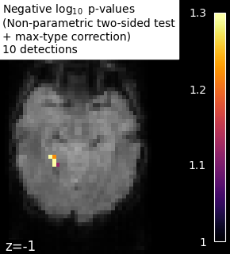

Note
Click here to download the full example code or to run this example in your browser via Binder
9.8.9. Massively univariate analysis of face vs house recognition¶
A permuted Ordinary Least Squares algorithm is run at each voxel in order to determine whether or not it behaves differently under a “face viewing” condition and a “house viewing” condition. We consider the mean image per session and per condition. Otherwise, the observations cannot be exchanged at random because a time dependence exists between observations within a same session (see [1] for more detailed explanations).
The example shows the small differences that exist between Bonferroni-corrected p-values and family-wise corrected p-values obtained from a permutation test combined with a max-type procedure [2]. Bonferroni correction is a bit conservative, as revealed by the presence of a few false negative.
Note
If you are using Nilearn with a version older than 0.9.0,
then you should either upgrade your version or import maskers
from the input_data module instead of the maskers module.
That is, you should manually replace in the following example all occurrences of:
from nilearn.maskers import NiftiMasker
with:
from nilearn.input_data import NiftiMasker
9.8.9.1. References¶
- [1] Winkler, A. M. et al. (2014).
Permutation inference for the general linear model. Neuroimage.
- [2] Anderson, M. J. & Robinson, J. (2001).
Permutation tests for linear models. Australian & New Zealand Journal of Statistics, 43(1), 75-88. (http://avesbiodiv.mncn.csic.es/estadistica/permut2.pdf)
# Author: Virgile Fritsch, <virgile.fritsch@inria.fr>, Feb. 2014
Load Haxby dataset
from nilearn import datasets, image
haxby_dataset = datasets.fetch_haxby(subjects=[2])
# print basic information on the dataset
print('Mask nifti image (3D) is located at: %s' % haxby_dataset.mask)
print('Functional nifti image (4D) is located at: %s' % haxby_dataset.func[0])
Out:
Mask nifti image (3D) is located at: /home/circleci/nilearn_data/haxby2001/mask.nii.gz
Functional nifti image (4D) is located at: /home/circleci/nilearn_data/haxby2001/subj2/bold.nii.gz
Restrict to faces and houses
import numpy as np
import pandas as pd
labels = pd.read_csv(haxby_dataset.session_target[0], sep=" ")
conditions = labels['labels']
categories = conditions.unique()
conditions_encoded = np.zeros_like(conditions)
for c, category in enumerate(categories):
conditions_encoded[conditions == category] = c
sessions = labels['chunks']
condition_mask = conditions.isin(['face', 'house'])
conditions_encoded = conditions_encoded[condition_mask]
Mask data
mask_filename = haxby_dataset.mask
from nilearn.image import index_img
from nilearn.maskers import NiftiMasker
nifti_masker = NiftiMasker(
smoothing_fwhm=8,
mask_img=mask_filename,
memory='nilearn_cache', memory_level=1) # cache options
func_filename = haxby_dataset.func[0]
func_reduced = index_img(func_filename,
condition_mask)
fmri_masked = nifti_masker.fit_transform(func_reduced)
# We consider the mean image per session and per condition.
# Otherwise, the observations cannot be exchanged at random because
# a time dependence exists between observations within a same session.
n_sessions = np.unique(sessions).size
grouped_fmri_masked = np.empty((2 * n_sessions, # two conditions per session
fmri_masked.shape[1]))
grouped_conditions_encoded = np.empty((2 * n_sessions, 1))
for s in range(n_sessions):
session_mask = sessions[condition_mask] == s
session_house_mask = np.logical_and(session_mask,
conditions[condition_mask] == 'house')
session_face_mask = np.logical_and(session_mask,
conditions[condition_mask] == 'face')
grouped_fmri_masked[2 * s] = fmri_masked[session_house_mask].mean(0)
grouped_fmri_masked[2 * s + 1] = fmri_masked[session_face_mask].mean(0)
grouped_conditions_encoded[2 * s] = conditions_encoded[
session_house_mask][0]
grouped_conditions_encoded[2 * s + 1] = conditions_encoded[
session_face_mask][0]
Perform massively univariate analysis with permuted OLS
We use a two-sided t-test to compute p-values, but we keep trace of the effect sign to add it back at the end and thus observe the signed effect
from nilearn.mass_univariate import permuted_ols
neg_log_pvals, t_scores_original_data, _ = permuted_ols(
grouped_conditions_encoded, grouped_fmri_masked,
# + intercept as a covariate by default
n_perm=10000, two_sided_test=True,
verbose=1, # display progress bar
n_jobs=1) # can be changed to use more CPUs
signed_neg_log_pvals = neg_log_pvals * np.sign(t_scores_original_data)
signed_neg_log_pvals_unmasked = nifti_masker.inverse_transform(
signed_neg_log_pvals)
Out:
[Parallel(n_jobs=1)]: Using backend SequentialBackend with 1 concurrent workers.
Job #1, processed 0/10000 permutations (0.00%, 21.693706512451172 seconds remaining)
Job #1, processed 10/10000 permutations (0.10%, 14.479448318481445 seconds remaining)
Job #1, processed 20/10000 permutations (0.20%, 13.149850368499754 seconds remaining)
Job #1, processed 30/10000 permutations (0.30%, 12.743275165557863 seconds remaining)
Job #1, processed 40/10000 permutations (0.40%, 12.463167428970335 seconds remaining)
Job #1, processed 50/10000 permutations (0.50%, 12.37990140914917 seconds remaining)
Job #1, processed 60/10000 permutations (0.60%, 12.294782956441244 seconds remaining)
Job #1, processed 70/10000 permutations (0.70%, 12.196022885186332 seconds remaining)
Job #1, processed 80/10000 permutations (0.80%, 12.111207962036133 seconds remaining)
Job #1, processed 90/10000 permutations (0.90%, 12.067528857125176 seconds remaining)
Job #1, processed 100/10000 permutations (1.00%, 12.024040460586548 seconds remaining)
Job #1, processed 110/10000 permutations (1.10%, 11.972454872998323 seconds remaining)
Job #1, processed 120/10000 permutations (1.20%, 11.949010372161865 seconds remaining)
Job #1, processed 130/10000 permutations (1.30%, 11.939441387469952 seconds remaining)
Job #1, processed 140/10000 permutations (1.40%, 11.921614919389997 seconds remaining)
Job #1, processed 150/10000 permutations (1.50%, 11.888734896977743 seconds remaining)
Job #1, processed 160/10000 permutations (1.60%, 11.871044397354126 seconds remaining)
Job #1, processed 170/10000 permutations (1.70%, 11.847187953836777 seconds remaining)
Job #1, processed 180/10000 permutations (1.80%, 11.81779670715332 seconds remaining)
Job #1, processed 190/10000 permutations (1.90%, 11.810316964199668 seconds remaining)
Job #1, processed 200/10000 permutations (2.00%, 11.793097019195557 seconds remaining)
Job #1, processed 210/10000 permutations (2.10%, 11.811848038718814 seconds remaining)
Job #1, processed 220/10000 permutations (2.20%, 11.815467010844836 seconds remaining)
Job #1, processed 230/10000 permutations (2.30%, 11.839719005253004 seconds remaining)
Job #1, processed 240/10000 permutations (2.40%, 11.834111849466959 seconds remaining)
Job #1, processed 250/10000 permutations (2.50%, 11.822131633758545 seconds remaining)
Job #1, processed 260/10000 permutations (2.60%, 11.797332176795372 seconds remaining)
Job #1, processed 270/10000 permutations (2.70%, 11.803636992419205 seconds remaining)
Job #1, processed 280/10000 permutations (2.80%, 11.793311323438372 seconds remaining)
Job #1, processed 290/10000 permutations (2.90%, 11.787647296642433 seconds remaining)
Job #1, processed 300/10000 permutations (3.00%, 11.772666215896606 seconds remaining)
Job #1, processed 310/10000 permutations (3.10%, 11.762837486882363 seconds remaining)
Job #1, processed 320/10000 permutations (3.20%, 11.749499022960661 seconds remaining)
Job #1, processed 330/10000 permutations (3.30%, 11.7406650167523 seconds remaining)
Job #1, processed 340/10000 permutations (3.40%, 11.718251592972699 seconds remaining)
Job #1, processed 350/10000 permutations (3.50%, 11.705195188522339 seconds remaining)
Job #1, processed 360/10000 permutations (3.60%, 11.693583859337702 seconds remaining)
Job #1, processed 370/10000 permutations (3.70%, 11.670035439568595 seconds remaining)
Job #1, processed 380/10000 permutations (3.80%, 11.662888526916504 seconds remaining)
Job #1, processed 390/10000 permutations (3.90%, 11.713402894827034 seconds remaining)
Job #1, processed 400/10000 permutations (4.00%, 11.718463897705078 seconds remaining)
Job #1, processed 410/10000 permutations (4.10%, 11.697068208601419 seconds remaining)
Job #1, processed 420/10000 permutations (4.20%, 11.686988910039265 seconds remaining)
Job #1, processed 430/10000 permutations (4.30%, 11.673776948174766 seconds remaining)
Job #1, processed 440/10000 permutations (4.40%, 11.660695964639835 seconds remaining)
Job #1, processed 450/10000 permutations (4.50%, 11.638882372114393 seconds remaining)
Job #1, processed 460/10000 permutations (4.60%, 11.631707450617917 seconds remaining)
Job #1, processed 470/10000 permutations (4.70%, 11.617869640918489 seconds remaining)
Job #1, processed 480/10000 permutations (4.80%, 11.604165236155193 seconds remaining)
Job #1, processed 490/10000 permutations (4.90%, 11.583098961382493 seconds remaining)
Job #1, processed 500/10000 permutations (5.00%, 11.568299531936646 seconds remaining)
Job #1, processed 510/10000 permutations (5.10%, 11.55362154455746 seconds remaining)
Job #1, processed 520/10000 permutations (5.20%, 11.532981469080998 seconds remaining)
Job #1, processed 530/10000 permutations (5.30%, 11.518506113088357 seconds remaining)
Job #1, processed 540/10000 permutations (5.40%, 11.505077565157853 seconds remaining)
Job #1, processed 550/10000 permutations (5.50%, 11.495699904181741 seconds remaining)
Job #1, processed 560/10000 permutations (5.60%, 11.47644669669015 seconds remaining)
Job #1, processed 570/10000 permutations (5.70%, 11.463109233923124 seconds remaining)
Job #1, processed 580/10000 permutations (5.80%, 11.453117954319922 seconds remaining)
Job #1, processed 590/10000 permutations (5.90%, 11.44214376352601 seconds remaining)
Job #1, processed 600/10000 permutations (6.00%, 11.423268715540567 seconds remaining)
Job #1, processed 610/10000 permutations (6.10%, 11.410599126190437 seconds remaining)
Job #1, processed 620/10000 permutations (6.20%, 11.396028357167397 seconds remaining)
Job #1, processed 630/10000 permutations (6.30%, 11.381855048830547 seconds remaining)
Job #1, processed 640/10000 permutations (6.40%, 11.375005424022673 seconds remaining)
Job #1, processed 650/10000 permutations (6.50%, 11.362024508989775 seconds remaining)
Job #1, processed 660/10000 permutations (6.60%, 11.348648685397524 seconds remaining)
Job #1, processed 670/10000 permutations (6.70%, 11.330135993103482 seconds remaining)
Job #1, processed 680/10000 permutations (6.80%, 11.320797064725092 seconds remaining)
Job #1, processed 690/10000 permutations (6.90%, 11.31009378640548 seconds remaining)
Job #1, processed 700/10000 permutations (7.00%, 11.29200063432966 seconds remaining)
Job #1, processed 710/10000 permutations (7.10%, 11.281477854285443 seconds remaining)
Job #1, processed 720/10000 permutations (7.20%, 11.265774832831488 seconds remaining)
Job #1, processed 730/10000 permutations (7.30%, 11.250809659696607 seconds remaining)
Job #1, processed 740/10000 permutations (7.40%, 11.232803183632926 seconds remaining)
Job #1, processed 750/10000 permutations (7.50%, 11.216671228408813 seconds remaining)
Job #1, processed 760/10000 permutations (7.60%, 11.202076359799035 seconds remaining)
Job #1, processed 770/10000 permutations (7.70%, 11.184858721572084 seconds remaining)
Job #1, processed 780/10000 permutations (7.80%, 11.169070531160404 seconds remaining)
Job #1, processed 790/10000 permutations (7.90%, 11.155237071121794 seconds remaining)
Job #1, processed 800/10000 permutations (8.00%, 11.144850134849548 seconds remaining)
Job #1, processed 810/10000 permutations (8.10%, 11.1283251915449 seconds remaining)
Job #1, processed 820/10000 permutations (8.20%, 11.113670930629823 seconds remaining)
Job #1, processed 830/10000 permutations (8.30%, 11.099539173654762 seconds remaining)
Job #1, processed 840/10000 permutations (8.40%, 11.083611476989018 seconds remaining)
Job #1, processed 850/10000 permutations (8.50%, 11.068747001535753 seconds remaining)
Job #1, processed 860/10000 permutations (8.60%, 11.053777949754583 seconds remaining)
Job #1, processed 870/10000 permutations (8.70%, 11.045759201049806 seconds remaining)
Job #1, processed 880/10000 permutations (8.80%, 11.033411329442805 seconds remaining)
Job #1, processed 890/10000 permutations (8.90%, 11.019644388991795 seconds remaining)
Job #1, processed 900/10000 permutations (9.00%, 11.006373776329887 seconds remaining)
Job #1, processed 910/10000 permutations (9.10%, 10.99180975851122 seconds remaining)
Job #1, processed 920/10000 permutations (9.20%, 10.98011673015097 seconds remaining)
Job #1, processed 930/10000 permutations (9.30%, 10.9661471561719 seconds remaining)
Job #1, processed 940/10000 permutations (9.40%, 10.955595001261285 seconds remaining)
Job #1, processed 950/10000 permutations (9.50%, 10.940446426993923 seconds remaining)
Job #1, processed 960/10000 permutations (9.60%, 10.930439909299215 seconds remaining)
Job #1, processed 970/10000 permutations (9.70%, 10.920163946053417 seconds remaining)
Job #1, processed 980/10000 permutations (9.80%, 10.906741847797315 seconds remaining)
Job #1, processed 990/10000 permutations (9.90%, 10.894178395319466 seconds remaining)
Job #1, processed 1000/10000 permutations (10.00%, 10.880155563354492 seconds remaining)
Job #1, processed 1010/10000 permutations (10.10%, 10.870425920675299 seconds remaining)
Job #1, processed 1020/10000 permutations (10.20%, 10.854992160610125 seconds remaining)
Job #1, processed 1030/10000 permutations (10.30%, 10.846210539919658 seconds remaining)
Job #1, processed 1040/10000 permutations (10.40%, 10.833551847017727 seconds remaining)
Job #1, processed 1050/10000 permutations (10.50%, 10.824418942133585 seconds remaining)
Job #1, processed 1060/10000 permutations (10.60%, 10.812808689081445 seconds remaining)
Job #1, processed 1070/10000 permutations (10.70%, 10.80080030566064 seconds remaining)
Job #1, processed 1080/10000 permutations (10.80%, 10.788106830031785 seconds remaining)
Job #1, processed 1090/10000 permutations (10.90%, 10.776033725213567 seconds remaining)
Job #1, processed 1100/10000 permutations (11.00%, 10.76362839612094 seconds remaining)
Job #1, processed 1110/10000 permutations (11.10%, 10.750520940299507 seconds remaining)
Job #1, processed 1120/10000 permutations (11.20%, 10.738626633371625 seconds remaining)
Job #1, processed 1130/10000 permutations (11.30%, 10.725992877926446 seconds remaining)
Job #1, processed 1140/10000 permutations (11.40%, 10.714044299042014 seconds remaining)
Job #1, processed 1150/10000 permutations (11.50%, 10.70123054670251 seconds remaining)
Job #1, processed 1160/10000 permutations (11.60%, 10.689933431559597 seconds remaining)
Job #1, processed 1170/10000 permutations (11.70%, 10.675403717236641 seconds remaining)
Job #1, processed 1180/10000 permutations (11.80%, 10.663437075534109 seconds remaining)
Job #1, processed 1190/10000 permutations (11.90%, 10.650227220118547 seconds remaining)
Job #1, processed 1200/10000 permutations (12.00%, 10.637883027394611 seconds remaining)
Job #1, processed 1210/10000 permutations (12.10%, 10.627066044768027 seconds remaining)
Job #1, processed 1220/10000 permutations (12.20%, 10.617414419768286 seconds remaining)
Job #1, processed 1230/10000 permutations (12.30%, 10.604868532196292 seconds remaining)
Job #1, processed 1240/10000 permutations (12.40%, 10.592241710232148 seconds remaining)
Job #1, processed 1250/10000 permutations (12.50%, 10.578591585159302 seconds remaining)
Job #1, processed 1260/10000 permutations (12.60%, 10.567471920497834 seconds remaining)
Job #1, processed 1270/10000 permutations (12.70%, 10.55376990761344 seconds remaining)
Job #1, processed 1280/10000 permutations (12.80%, 10.545138329267502 seconds remaining)
Job #1, processed 1290/10000 permutations (12.90%, 10.532649398774138 seconds remaining)
Job #1, processed 1300/10000 permutations (13.00%, 10.529019685891958 seconds remaining)
Job #1, processed 1310/10000 permutations (13.10%, 10.516637718404523 seconds remaining)
Job #1, processed 1320/10000 permutations (13.20%, 10.505100958275072 seconds remaining)
Job #1, processed 1330/10000 permutations (13.30%, 10.492565933026766 seconds remaining)
Job #1, processed 1340/10000 permutations (13.40%, 10.481862687352876 seconds remaining)
Job #1, processed 1350/10000 permutations (13.50%, 10.46793203883701 seconds remaining)
Job #1, processed 1360/10000 permutations (13.60%, 10.455339600058164 seconds remaining)
Job #1, processed 1370/10000 permutations (13.70%, 10.445000738993178 seconds remaining)
Job #1, processed 1380/10000 permutations (13.80%, 10.43421529341435 seconds remaining)
Job #1, processed 1390/10000 permutations (13.90%, 10.422099387903007 seconds remaining)
Job #1, processed 1400/10000 permutations (14.00%, 10.40919133595058 seconds remaining)
Job #1, processed 1410/10000 permutations (14.10%, 10.399083869677064 seconds remaining)
Job #1, processed 1420/10000 permutations (14.20%, 10.386177748021947 seconds remaining)
Job #1, processed 1430/10000 permutations (14.30%, 10.374424886036586 seconds remaining)
Job #1, processed 1440/10000 permutations (14.40%, 10.361796114179821 seconds remaining)
Job #1, processed 1450/10000 permutations (14.50%, 10.35066034876067 seconds remaining)
Job #1, processed 1460/10000 permutations (14.60%, 10.340013895949273 seconds remaining)
Job #1, processed 1470/10000 permutations (14.70%, 10.328410343248018 seconds remaining)
Job #1, processed 1480/10000 permutations (14.80%, 10.315692553649079 seconds remaining)
Job #1, processed 1490/10000 permutations (14.90%, 10.30221091660877 seconds remaining)
Job #1, processed 1500/10000 permutations (15.00%, 10.28801719347636 seconds remaining)
Job #1, processed 1510/10000 permutations (15.10%, 10.275197854894676 seconds remaining)
Job #1, processed 1520/10000 permutations (15.20%, 10.261640749479596 seconds remaining)
Job #1, processed 1530/10000 permutations (15.30%, 10.248166777729208 seconds remaining)
Job #1, processed 1540/10000 permutations (15.40%, 10.240497731543206 seconds remaining)
Job #1, processed 1550/10000 permutations (15.50%, 10.227659533100743 seconds remaining)
Job #1, processed 1560/10000 permutations (15.60%, 10.218815693488489 seconds remaining)
Job #1, processed 1570/10000 permutations (15.70%, 10.206013008287758 seconds remaining)
Job #1, processed 1580/10000 permutations (15.80%, 10.196027426780025 seconds remaining)
Job #1, processed 1590/10000 permutations (15.90%, 10.183297596637557 seconds remaining)
Job #1, processed 1600/10000 permutations (16.00%, 10.17421817779541 seconds remaining)
Job #1, processed 1610/10000 permutations (16.10%, 10.160626140440474 seconds remaining)
Job #1, processed 1620/10000 permutations (16.20%, 10.15126143561469 seconds remaining)
Job #1, processed 1630/10000 permutations (16.30%, 10.139818115468406 seconds remaining)
Job #1, processed 1640/10000 permutations (16.40%, 10.131063112398474 seconds remaining)
Job #1, processed 1650/10000 permutations (16.50%, 10.117205193548491 seconds remaining)
Job #1, processed 1660/10000 permutations (16.60%, 10.10761631253254 seconds remaining)
Job #1, processed 1670/10000 permutations (16.70%, 10.094532833841747 seconds remaining)
Job #1, processed 1680/10000 permutations (16.80%, 10.084881373814174 seconds remaining)
Job #1, processed 1690/10000 permutations (16.90%, 10.071176036575137 seconds remaining)
Job #1, processed 1700/10000 permutations (17.00%, 10.057862127528471 seconds remaining)
Job #1, processed 1710/10000 permutations (17.10%, 10.04957215967234 seconds remaining)
Job #1, processed 1720/10000 permutations (17.20%, 10.036559509676556 seconds remaining)
Job #1, processed 1730/10000 permutations (17.30%, 10.023016779408978 seconds remaining)
Job #1, processed 1740/10000 permutations (17.40%, 10.013438137098289 seconds remaining)
Job #1, processed 1750/10000 permutations (17.50%, 10.000591788973127 seconds remaining)
Job #1, processed 1760/10000 permutations (17.60%, 9.987073388966646 seconds remaining)
Job #1, processed 1770/10000 permutations (17.70%, 9.97762156071636 seconds remaining)
Job #1, processed 1780/10000 permutations (17.80%, 9.965051570635165 seconds remaining)
Job #1, processed 1790/10000 permutations (17.90%, 9.956623375748789 seconds remaining)
Job #1, processed 1800/10000 permutations (18.00%, 9.94302733739217 seconds remaining)
Job #1, processed 1810/10000 permutations (18.10%, 9.933222612623352 seconds remaining)
Job #1, processed 1820/10000 permutations (18.20%, 9.920392770033617 seconds remaining)
Job #1, processed 1830/10000 permutations (18.30%, 9.911114671842647 seconds remaining)
Job #1, processed 1840/10000 permutations (18.40%, 9.897901327713676 seconds remaining)
Job #1, processed 1850/10000 permutations (18.50%, 9.888458303503088 seconds remaining)
Job #1, processed 1860/10000 permutations (18.60%, 9.875523041653375 seconds remaining)
Job #1, processed 1870/10000 permutations (18.70%, 9.864139665256847 seconds remaining)
Job #1, processed 1880/10000 permutations (18.80%, 9.855330173005449 seconds remaining)
Job #1, processed 1890/10000 permutations (18.90%, 9.84252530557138 seconds remaining)
Job #1, processed 1900/10000 permutations (19.00%, 9.829325588125933 seconds remaining)
Job #1, processed 1910/10000 permutations (19.10%, 9.815376174387508 seconds remaining)
Job #1, processed 1920/10000 permutations (19.20%, 9.802273869514465 seconds remaining)
Job #1, processed 1930/10000 permutations (19.30%, 9.793142732560943 seconds remaining)
Job #1, processed 1940/10000 permutations (19.40%, 9.780122034328501 seconds remaining)
Job #1, processed 1950/10000 permutations (19.50%, 9.771388145593498 seconds remaining)
Job #1, processed 1960/10000 permutations (19.60%, 9.757882512345606 seconds remaining)
Job #1, processed 1970/10000 permutations (19.70%, 9.745548675508063 seconds remaining)
Job #1, processed 1980/10000 permutations (19.80%, 9.73381413112987 seconds remaining)
Job #1, processed 1990/10000 permutations (19.90%, 9.723131141470905 seconds remaining)
Job #1, processed 2000/10000 permutations (20.00%, 9.710311889648438 seconds remaining)
Job #1, processed 2010/10000 permutations (20.10%, 9.698282042546058 seconds remaining)
Job #1, processed 2020/10000 permutations (20.20%, 9.688376660394196 seconds remaining)
Job #1, processed 2030/10000 permutations (20.30%, 9.674869847415117 seconds remaining)
Job #1, processed 2040/10000 permutations (20.40%, 9.663644187590656 seconds remaining)
Job #1, processed 2050/10000 permutations (20.50%, 9.652810457276134 seconds remaining)
Job #1, processed 2060/10000 permutations (20.60%, 9.642830101031702 seconds remaining)
Job #1, processed 2070/10000 permutations (20.70%, 9.629677823200318 seconds remaining)
Job #1, processed 2080/10000 permutations (20.80%, 9.617007108835073 seconds remaining)
Job #1, processed 2090/10000 permutations (20.90%, 9.607228450227582 seconds remaining)
Job #1, processed 2100/10000 permutations (21.00%, 9.593648933228993 seconds remaining)
Job #1, processed 2110/10000 permutations (21.10%, 9.583214097678379 seconds remaining)
Job #1, processed 2120/10000 permutations (21.20%, 9.571303691504136 seconds remaining)
Job #1, processed 2130/10000 permutations (21.30%, 9.559270672954863 seconds remaining)
Job #1, processed 2140/10000 permutations (21.40%, 9.548427243099034 seconds remaining)
Job #1, processed 2150/10000 permutations (21.50%, 9.535324229750522 seconds remaining)
Job #1, processed 2160/10000 permutations (21.60%, 9.522779394079137 seconds remaining)
Job #1, processed 2170/10000 permutations (21.70%, 9.509911467952113 seconds remaining)
Job #1, processed 2180/10000 permutations (21.80%, 9.498994256378314 seconds remaining)
Job #1, processed 2190/10000 permutations (21.90%, 9.486075664764126 seconds remaining)
Job #1, processed 2200/10000 permutations (22.00%, 9.47717616774819 seconds remaining)
Job #1, processed 2210/10000 permutations (22.10%, 9.464244589007277 seconds remaining)
Job #1, processed 2220/10000 permutations (22.20%, 9.453689128428966 seconds remaining)
Job #1, processed 2230/10000 permutations (22.30%, 9.441141497393895 seconds remaining)
Job #1, processed 2240/10000 permutations (22.40%, 9.428447272096362 seconds remaining)
Job #1, processed 2250/10000 permutations (22.50%, 9.415195094214546 seconds remaining)
Job #1, processed 2260/10000 permutations (22.60%, 9.402959834157894 seconds remaining)
Job #1, processed 2270/10000 permutations (22.70%, 9.390588351808455 seconds remaining)
Job #1, processed 2280/10000 permutations (22.80%, 9.379293885147362 seconds remaining)
Job #1, processed 2290/10000 permutations (22.90%, 9.36871059388573 seconds remaining)
Job #1, processed 2300/10000 permutations (23.00%, 9.355617709781813 seconds remaining)
Job #1, processed 2310/10000 permutations (23.10%, 9.342968770435878 seconds remaining)
Job #1, processed 2320/10000 permutations (23.20%, 9.329843981512662 seconds remaining)
Job #1, processed 2330/10000 permutations (23.30%, 9.316241924343192 seconds remaining)
Job #1, processed 2340/10000 permutations (23.40%, 9.30378461902977 seconds remaining)
Job #1, processed 2350/10000 permutations (23.50%, 9.291638115619092 seconds remaining)
Job #1, processed 2360/10000 permutations (23.60%, 9.27806913650642 seconds remaining)
Job #1, processed 2370/10000 permutations (23.70%, 9.265699464057569 seconds remaining)
Job #1, processed 2380/10000 permutations (23.80%, 9.252384971169866 seconds remaining)
Job #1, processed 2390/10000 permutations (23.90%, 9.239292860031128 seconds remaining)
Job #1, processed 2400/10000 permutations (24.00%, 9.226900458335876 seconds remaining)
Job #1, processed 2410/10000 permutations (24.10%, 9.215285699891846 seconds remaining)
Job #1, processed 2420/10000 permutations (24.20%, 9.202726509945451 seconds remaining)
Job #1, processed 2430/10000 permutations (24.30%, 9.191765008149323 seconds remaining)
Job #1, processed 2440/10000 permutations (24.40%, 9.178872315610041 seconds remaining)
Job #1, processed 2450/10000 permutations (24.50%, 9.16693992030864 seconds remaining)
Job #1, processed 2460/10000 permutations (24.60%, 9.156505530442649 seconds remaining)
Job #1, processed 2470/10000 permutations (24.70%, 9.143153446406005 seconds remaining)
Job #1, processed 2480/10000 permutations (24.80%, 9.130099865698044 seconds remaining)
Job #1, processed 2490/10000 permutations (24.90%, 9.11955843680355 seconds remaining)
Job #1, processed 2500/10000 permutations (25.00%, 9.106756925582886 seconds remaining)
Job #1, processed 2510/10000 permutations (25.10%, 9.09354336043278 seconds remaining)
Job #1, processed 2520/10000 permutations (25.20%, 9.082898726539007 seconds remaining)
Job #1, processed 2530/10000 permutations (25.30%, 9.071114075513696 seconds remaining)
Job #1, processed 2540/10000 permutations (25.40%, 9.060499245726218 seconds remaining)
Job #1, processed 2550/10000 permutations (25.50%, 9.047394874049168 seconds remaining)
Job #1, processed 2560/10000 permutations (25.60%, 9.036756210029125 seconds remaining)
Job #1, processed 2570/10000 permutations (25.70%, 9.02398226233308 seconds remaining)
Job #1, processed 2580/10000 permutations (25.80%, 9.010884364446005 seconds remaining)
Job #1, processed 2590/10000 permutations (25.90%, 9.00030179373546 seconds remaining)
Job #1, processed 2600/10000 permutations (26.00%, 8.987967894627499 seconds remaining)
Job #1, processed 2610/10000 permutations (26.10%, 8.976008574167887 seconds remaining)
Job #1, processed 2620/10000 permutations (26.20%, 8.964917017303351 seconds remaining)
Job #1, processed 2630/10000 permutations (26.30%, 8.952299974717116 seconds remaining)
Job #1, processed 2640/10000 permutations (26.40%, 8.939454454364197 seconds remaining)
Job #1, processed 2650/10000 permutations (26.50%, 8.928521889560628 seconds remaining)
Job #1, processed 2660/10000 permutations (26.60%, 8.915340079400773 seconds remaining)
Job #1, processed 2670/10000 permutations (26.70%, 8.904561148154155 seconds remaining)
Job #1, processed 2680/10000 permutations (26.80%, 8.892344766588353 seconds remaining)
Job #1, processed 2690/10000 permutations (26.90%, 8.882714182913968 seconds remaining)
Job #1, processed 2700/10000 permutations (27.00%, 8.870789695669103 seconds remaining)
Job #1, processed 2710/10000 permutations (27.10%, 8.85860701328714 seconds remaining)
Job #1, processed 2720/10000 permutations (27.20%, 8.846092820167542 seconds remaining)
Job #1, processed 2730/10000 permutations (27.30%, 8.833244502762735 seconds remaining)
Job #1, processed 2740/10000 permutations (27.40%, 8.820029836501519 seconds remaining)
Job #1, processed 2750/10000 permutations (27.50%, 8.809398521076549 seconds remaining)
Job #1, processed 2760/10000 permutations (27.60%, 8.796867657398833 seconds remaining)
Job #1, processed 2770/10000 permutations (27.70%, 8.785743243427483 seconds remaining)
Job #1, processed 2780/10000 permutations (27.80%, 8.773659383650307 seconds remaining)
Job #1, processed 2790/10000 permutations (27.90%, 8.760953175978848 seconds remaining)
Job #1, processed 2800/10000 permutations (28.00%, 8.75015115737915 seconds remaining)
Job #1, processed 2810/10000 permutations (28.10%, 8.737082902222767 seconds remaining)
Job #1, processed 2820/10000 permutations (28.20%, 8.726079710831877 seconds remaining)
Job #1, processed 2830/10000 permutations (28.30%, 8.71348804045903 seconds remaining)
Job #1, processed 2840/10000 permutations (28.40%, 8.702589118984383 seconds remaining)
Job #1, processed 2850/10000 permutations (28.50%, 8.689787195439923 seconds remaining)
Job #1, processed 2860/10000 permutations (28.60%, 8.679648634437081 seconds remaining)
Job #1, processed 2870/10000 permutations (28.70%, 8.666878920398938 seconds remaining)
Job #1, processed 2880/10000 permutations (28.80%, 8.653815752930111 seconds remaining)
Job #1, processed 2890/10000 permutations (28.90%, 8.642768613194923 seconds remaining)
Job #1, processed 2900/10000 permutations (29.00%, 8.63012303155044 seconds remaining)
Job #1, processed 2910/10000 permutations (29.10%, 8.619051753860159 seconds remaining)
Job #1, processed 2920/10000 permutations (29.20%, 8.605910872759884 seconds remaining)
Job #1, processed 2930/10000 permutations (29.30%, 8.595013358080347 seconds remaining)
Job #1, processed 2940/10000 permutations (29.40%, 8.583274147137493 seconds remaining)
Job #1, processed 2950/10000 permutations (29.50%, 8.57073892981319 seconds remaining)
Job #1, processed 2960/10000 permutations (29.60%, 8.557703224388328 seconds remaining)
Job #1, processed 2970/10000 permutations (29.70%, 8.546632481745196 seconds remaining)
Job #1, processed 2980/10000 permutations (29.80%, 8.534144462355032 seconds remaining)
Job #1, processed 2990/10000 permutations (29.90%, 8.521697044372559 seconds remaining)
Job #1, processed 3000/10000 permutations (30.00%, 8.510731061299643 seconds remaining)
Job #1, processed 3010/10000 permutations (30.10%, 8.498613771806127 seconds remaining)
Job #1, processed 3020/10000 permutations (30.20%, 8.486776026668927 seconds remaining)
Job #1, processed 3030/10000 permutations (30.30%, 8.474295219572463 seconds remaining)
Job #1, processed 3040/10000 permutations (30.40%, 8.462993766132152 seconds remaining)
Job #1, processed 3050/10000 permutations (30.50%, 8.450571599553843 seconds remaining)
Job #1, processed 3060/10000 permutations (30.60%, 8.437935071832992 seconds remaining)
Job #1, processed 3070/10000 permutations (30.70%, 8.42651341326462 seconds remaining)
Job #1, processed 3080/10000 permutations (30.80%, 8.413802462738829 seconds remaining)
Job #1, processed 3090/10000 permutations (30.90%, 8.403149346317672 seconds remaining)
Job #1, processed 3100/10000 permutations (31.00%, 8.390420506077428 seconds remaining)
Job #1, processed 3110/10000 permutations (31.10%, 8.37873751480863 seconds remaining)
Job #1, processed 3120/10000 permutations (31.20%, 8.366039080497547 seconds remaining)
Job #1, processed 3130/10000 permutations (31.30%, 8.353325231387593 seconds remaining)
Job #1, processed 3140/10000 permutations (31.40%, 8.343185479473915 seconds remaining)
Job #1, processed 3150/10000 permutations (31.50%, 8.330271910107324 seconds remaining)
Job #1, processed 3160/10000 permutations (31.60%, 8.319409439835367 seconds remaining)
Job #1, processed 3170/10000 permutations (31.70%, 8.306940496908002 seconds remaining)
Job #1, processed 3180/10000 permutations (31.80%, 8.29398094333193 seconds remaining)
Job #1, processed 3190/10000 permutations (31.90%, 8.282081787115354 seconds remaining)
Job #1, processed 3200/10000 permutations (32.00%, 8.270875841379166 seconds remaining)
Job #1, processed 3210/10000 permutations (32.10%, 8.258334781521949 seconds remaining)
Job #1, processed 3220/10000 permutations (32.20%, 8.246983935373908 seconds remaining)
Job #1, processed 3230/10000 permutations (32.30%, 8.234420353414105 seconds remaining)
Job #1, processed 3240/10000 permutations (32.40%, 8.222134010291393 seconds remaining)
Job #1, processed 3250/10000 permutations (32.50%, 8.209722518920898 seconds remaining)
Job #1, processed 3260/10000 permutations (32.60%, 8.196892327326207 seconds remaining)
Job #1, processed 3270/10000 permutations (32.70%, 8.18667915691294 seconds remaining)
Job #1, processed 3280/10000 permutations (32.80%, 8.174497883494308 seconds remaining)
Job #1, processed 3290/10000 permutations (32.90%, 8.162003612083504 seconds remaining)
Job #1, processed 3300/10000 permutations (33.00%, 8.149068919095125 seconds remaining)
Job #1, processed 3310/10000 permutations (33.10%, 8.13782582686387 seconds remaining)
Job #1, processed 3320/10000 permutations (33.20%, 8.125282594956547 seconds remaining)
Job #1, processed 3330/10000 permutations (33.30%, 8.112485847673618 seconds remaining)
Job #1, processed 3340/10000 permutations (33.40%, 8.10133494731195 seconds remaining)
Job #1, processed 3350/10000 permutations (33.50%, 8.089525639121211 seconds remaining)
Job #1, processed 3360/10000 permutations (33.60%, 8.078402462459746 seconds remaining)
Job #1, processed 3370/10000 permutations (33.70%, 8.065536349746521 seconds remaining)
Job #1, processed 3380/10000 permutations (33.80%, 8.053037444515342 seconds remaining)
Job #1, processed 3390/10000 permutations (33.90%, 8.04068283697145 seconds remaining)
Job #1, processed 3400/10000 permutations (34.00%, 8.028223009670482 seconds remaining)
Job #1, processed 3410/10000 permutations (34.10%, 8.016770255880273 seconds remaining)
Job #1, processed 3420/10000 permutations (34.20%, 8.004306611958999 seconds remaining)
Job #1, processed 3430/10000 permutations (34.30%, 7.993934921898579 seconds remaining)
Job #1, processed 3440/10000 permutations (34.40%, 7.981376825376998 seconds remaining)
Job #1, processed 3450/10000 permutations (34.50%, 7.9700307569642 seconds remaining)
Job #1, processed 3460/10000 permutations (34.60%, 7.957462036540743 seconds remaining)
Job #1, processed 3470/10000 permutations (34.70%, 7.94497401844871 seconds remaining)
Job #1, processed 3480/10000 permutations (34.80%, 7.932524557771355 seconds remaining)
Job #1, processed 3490/10000 permutations (34.90%, 7.921268120877722 seconds remaining)
Job #1, processed 3500/10000 permutations (35.00%, 7.908775874546596 seconds remaining)
Job #1, processed 3510/10000 permutations (35.10%, 7.897536243808236 seconds remaining)
Job #1, processed 3520/10000 permutations (35.20%, 7.886397340080953 seconds remaining)
Job #1, processed 3530/10000 permutations (35.30%, 7.8736837031821025 seconds remaining)
Job #1, processed 3540/10000 permutations (35.40%, 7.861175382204649 seconds remaining)
Job #1, processed 3550/10000 permutations (35.50%, 7.848730228316616 seconds remaining)
Job #1, processed 3560/10000 permutations (35.60%, 7.835828580213397 seconds remaining)
Job #1, processed 3570/10000 permutations (35.70%, 7.824252489234218 seconds remaining)
Job #1, processed 3580/10000 permutations (35.80%, 7.812600286313276 seconds remaining)
Job #1, processed 3590/10000 permutations (35.90%, 7.800139882770421 seconds remaining)
Job #1, processed 3600/10000 permutations (36.00%, 7.787904103597005 seconds remaining)
Job #1, processed 3610/10000 permutations (36.10%, 7.776821443578873 seconds remaining)
Job #1, processed 3620/10000 permutations (36.20%, 7.764715460782551 seconds remaining)
Job #1, processed 3630/10000 permutations (36.30%, 7.753762401496742 seconds remaining)
Job #1, processed 3640/10000 permutations (36.40%, 7.741197517939976 seconds remaining)
Job #1, processed 3650/10000 permutations (36.50%, 7.729131682278359 seconds remaining)
Job #1, processed 3660/10000 permutations (36.60%, 7.7169633380702285 seconds remaining)
Job #1, processed 3670/10000 permutations (36.70%, 7.705091866875214 seconds remaining)
Job #1, processed 3680/10000 permutations (36.80%, 7.6930650887282015 seconds remaining)
Job #1, processed 3690/10000 permutations (36.90%, 7.680815272214937 seconds remaining)
Job #1, processed 3700/10000 permutations (37.00%, 7.668641219267974 seconds remaining)
Job #1, processed 3710/10000 permutations (37.10%, 7.657280873095571 seconds remaining)
Job #1, processed 3720/10000 permutations (37.20%, 7.644983829990509 seconds remaining)
Job #1, processed 3730/10000 permutations (37.30%, 7.6329683810073 seconds remaining)
Job #1, processed 3740/10000 permutations (37.40%, 7.622017484297727 seconds remaining)
Job #1, processed 3750/10000 permutations (37.50%, 7.609337568283081 seconds remaining)
Job #1, processed 3760/10000 permutations (37.60%, 7.5976800106941385 seconds remaining)
Job #1, processed 3770/10000 permutations (37.70%, 7.585575602098864 seconds remaining)
Job #1, processed 3780/10000 permutations (37.80%, 7.5733725078522225 seconds remaining)
Job #1, processed 3790/10000 permutations (37.90%, 7.5608055547548165 seconds remaining)
Job #1, processed 3800/10000 permutations (38.00%, 7.549775349466424 seconds remaining)
Job #1, processed 3810/10000 permutations (38.10%, 7.537613291127162 seconds remaining)
Job #1, processed 3820/10000 permutations (38.20%, 7.5253577631805575 seconds remaining)
Job #1, processed 3830/10000 permutations (38.30%, 7.512723806943969 seconds remaining)
Job #1, processed 3840/10000 permutations (38.40%, 7.502148682872455 seconds remaining)
Job #1, processed 3850/10000 permutations (38.50%, 7.4899425847189764 seconds remaining)
Job #1, processed 3860/10000 permutations (38.60%, 7.47797374527689 seconds remaining)
Job #1, processed 3870/10000 permutations (38.70%, 7.466504280573329 seconds remaining)
Job #1, processed 3880/10000 permutations (38.80%, 7.454308313192781 seconds remaining)
Job #1, processed 3890/10000 permutations (38.90%, 7.442366002457921 seconds remaining)
Job #1, processed 3900/10000 permutations (39.00%, 7.4297512005536985 seconds remaining)
Job #1, processed 3910/10000 permutations (39.10%, 7.41766029733526 seconds remaining)
Job #1, processed 3920/10000 permutations (39.20%, 7.406091164569464 seconds remaining)
Job #1, processed 3930/10000 permutations (39.30%, 7.394958443314065 seconds remaining)
Job #1, processed 3940/10000 permutations (39.40%, 7.384371412587045 seconds remaining)
Job #1, processed 3950/10000 permutations (39.50%, 7.371668384044985 seconds remaining)
Job #1, processed 3960/10000 permutations (39.60%, 7.359567514573684 seconds remaining)
Job #1, processed 3970/10000 permutations (39.70%, 7.348648670037987 seconds remaining)
Job #1, processed 3980/10000 permutations (39.80%, 7.335985761191978 seconds remaining)
Job #1, processed 3990/10000 permutations (39.90%, 7.323785055848889 seconds remaining)
Job #1, processed 4000/10000 permutations (40.00%, 7.313856840133667 seconds remaining)
Job #1, processed 4010/10000 permutations (40.10%, 7.301958557376243 seconds remaining)
Job #1, processed 4020/10000 permutations (40.20%, 7.290506501696002 seconds remaining)
Job #1, processed 4030/10000 permutations (40.30%, 7.27781850942607 seconds remaining)
Job #1, processed 4040/10000 permutations (40.40%, 7.266270710690186 seconds remaining)
Job #1, processed 4050/10000 permutations (40.50%, 7.254199887499397 seconds remaining)
Job #1, processed 4060/10000 permutations (40.60%, 7.24199307023598 seconds remaining)
Job #1, processed 4070/10000 permutations (40.70%, 7.229900315586999 seconds remaining)
Job #1, processed 4080/10000 permutations (40.80%, 7.218607248044482 seconds remaining)
Job #1, processed 4090/10000 permutations (40.90%, 7.206561919820921 seconds remaining)
Job #1, processed 4100/10000 permutations (41.00%, 7.194421704222516 seconds remaining)
Job #1, processed 4110/10000 permutations (41.10%, 7.18241634972194 seconds remaining)
Job #1, processed 4120/10000 permutations (41.20%, 7.170812657735879 seconds remaining)
Job #1, processed 4130/10000 permutations (41.30%, 7.158709357494882 seconds remaining)
Job #1, processed 4140/10000 permutations (41.40%, 7.146407542021379 seconds remaining)
Job #1, processed 4150/10000 permutations (41.50%, 7.134318670594548 seconds remaining)
Job #1, processed 4160/10000 permutations (41.60%, 7.12260379241063 seconds remaining)
Job #1, processed 4170/10000 permutations (41.70%, 7.1109662999352095 seconds remaining)
Job #1, processed 4180/10000 permutations (41.80%, 7.098901967682909 seconds remaining)
Job #1, processed 4190/10000 permutations (41.90%, 7.086730092692774 seconds remaining)
Job #1, processed 4200/10000 permutations (42.00%, 7.075090726216634 seconds remaining)
Job #1, processed 4210/10000 permutations (42.10%, 7.062957895056935 seconds remaining)
Job #1, processed 4220/10000 permutations (42.20%, 7.05074027590277 seconds remaining)
Job #1, processed 4230/10000 permutations (42.30%, 7.038703959602555 seconds remaining)
Job #1, processed 4240/10000 permutations (42.40%, 7.027004781759011 seconds remaining)
Job #1, processed 4250/10000 permutations (42.50%, 7.0152153968811035 seconds remaining)
Job #1, processed 4260/10000 permutations (42.60%, 7.003021100317368 seconds remaining)
Job #1, processed 4270/10000 permutations (42.70%, 6.990946091310201 seconds remaining)
Job #1, processed 4280/10000 permutations (42.80%, 6.979413649746192 seconds remaining)
Job #1, processed 4290/10000 permutations (42.90%, 6.967449897930617 seconds remaining)
Job #1, processed 4300/10000 permutations (43.00%, 6.955280675444492 seconds remaining)
Job #1, processed 4310/10000 permutations (43.10%, 6.943235828262471 seconds remaining)
Job #1, processed 4320/10000 permutations (43.20%, 6.93166743825983 seconds remaining)
Job #1, processed 4330/10000 permutations (43.30%, 6.920869400539795 seconds remaining)
Job #1, processed 4340/10000 permutations (43.40%, 6.908256216532624 seconds remaining)
Job #1, processed 4350/10000 permutations (43.50%, 6.896086070729399 seconds remaining)
Job #1, processed 4360/10000 permutations (43.60%, 6.884363146003233 seconds remaining)
Job #1, processed 4370/10000 permutations (43.70%, 6.872168191237635 seconds remaining)
Job #1, processed 4380/10000 permutations (43.80%, 6.8599278687342125 seconds remaining)
Job #1, processed 4390/10000 permutations (43.90%, 6.8478099968547435 seconds remaining)
Job #1, processed 4400/10000 permutations (44.00%, 6.835733587091619 seconds remaining)
Job #1, processed 4410/10000 permutations (44.10%, 6.823896383752628 seconds remaining)
Job #1, processed 4420/10000 permutations (44.20%, 6.811803358172939 seconds remaining)
Job #1, processed 4430/10000 permutations (44.30%, 6.799968710871368 seconds remaining)
Job #1, processed 4440/10000 permutations (44.40%, 6.788019685057907 seconds remaining)
Job #1, processed 4450/10000 permutations (44.50%, 6.775730175918407 seconds remaining)
Job #1, processed 4460/10000 permutations (44.60%, 6.763508250360532 seconds remaining)
Job #1, processed 4470/10000 permutations (44.70%, 6.751740075864514 seconds remaining)
Job #1, processed 4480/10000 permutations (44.80%, 6.739604370934623 seconds remaining)
Job #1, processed 4490/10000 permutations (44.90%, 6.72774894943747 seconds remaining)
Job #1, processed 4500/10000 permutations (45.00%, 6.715610345204672 seconds remaining)
Job #1, processed 4510/10000 permutations (45.10%, 6.7037915739410465 seconds remaining)
Job #1, processed 4520/10000 permutations (45.20%, 6.691608905792235 seconds remaining)
Job #1, processed 4530/10000 permutations (45.30%, 6.679283791556791 seconds remaining)
Job #1, processed 4540/10000 permutations (45.40%, 6.667096368016651 seconds remaining)
Job #1, processed 4550/10000 permutations (45.50%, 6.6553559722481195 seconds remaining)
Job #1, processed 4560/10000 permutations (45.60%, 6.643123994793807 seconds remaining)
Job #1, processed 4570/10000 permutations (45.70%, 6.631319941264012 seconds remaining)
Job #1, processed 4580/10000 permutations (45.80%, 6.6191774205869995 seconds remaining)
Job #1, processed 4590/10000 permutations (45.90%, 6.607263081993152 seconds remaining)
Job #1, processed 4600/10000 permutations (46.00%, 6.595039315845656 seconds remaining)
Job #1, processed 4610/10000 permutations (46.10%, 6.582786366117233 seconds remaining)
Job #1, processed 4620/10000 permutations (46.20%, 6.570651733514033 seconds remaining)
Job #1, processed 4630/10000 permutations (46.30%, 6.558912178352636 seconds remaining)
Job #1, processed 4640/10000 permutations (46.40%, 6.546730637550354 seconds remaining)
Job #1, processed 4650/10000 permutations (46.50%, 6.534690105786888 seconds remaining)
Job #1, processed 4660/10000 permutations (46.60%, 6.522482344009333 seconds remaining)
Job #1, processed 4670/10000 permutations (46.70%, 6.510696577566338 seconds remaining)
Job #1, processed 4680/10000 permutations (46.80%, 6.498028989531037 seconds remaining)
Job #1, processed 4690/10000 permutations (46.90%, 6.485962667444876 seconds remaining)
Job #1, processed 4700/10000 permutations (47.00%, 6.4738602080243695 seconds remaining)
Job #1, processed 4710/10000 permutations (47.10%, 6.4619962435112885 seconds remaining)
Job #1, processed 4720/10000 permutations (47.20%, 6.449371491448353 seconds remaining)
Job #1, processed 4730/10000 permutations (47.30%, 6.438270526506937 seconds remaining)
Job #1, processed 4740/10000 permutations (47.40%, 6.426171136807792 seconds remaining)
Job #1, processed 4750/10000 permutations (47.50%, 6.413842866295263 seconds remaining)
Job #1, processed 4760/10000 permutations (47.60%, 6.401196596001376 seconds remaining)
Job #1, processed 4770/10000 permutations (47.70%, 6.389388707698766 seconds remaining)
Job #1, processed 4780/10000 permutations (47.80%, 6.377172165834755 seconds remaining)
Job #1, processed 4790/10000 permutations (47.90%, 6.364980516951368 seconds remaining)
Job #1, processed 4800/10000 permutations (48.00%, 6.3527535398801165 seconds remaining)
Job #1, processed 4810/10000 permutations (48.10%, 6.34053770568911 seconds remaining)
Job #1, processed 4820/10000 permutations (48.20%, 6.328939623852488 seconds remaining)
Job #1, processed 4830/10000 permutations (48.30%, 6.316753204811681 seconds remaining)
Job #1, processed 4840/10000 permutations (48.40%, 6.304491549484001 seconds remaining)
Job #1, processed 4850/10000 permutations (48.50%, 6.292283913523881 seconds remaining)
Job #1, processed 4860/10000 permutations (48.60%, 6.280534611807929 seconds remaining)
Job #1, processed 4870/10000 permutations (48.70%, 6.26793444523821 seconds remaining)
Job #1, processed 4880/10000 permutations (48.80%, 6.2560164654841195 seconds remaining)
Job #1, processed 4890/10000 permutations (48.90%, 6.243843454524783 seconds remaining)
Job #1, processed 4900/10000 permutations (49.00%, 6.232341323580061 seconds remaining)
Job #1, processed 4910/10000 permutations (49.10%, 6.21978823279169 seconds remaining)
Job #1, processed 4920/10000 permutations (49.20%, 6.2077392523850845 seconds remaining)
Job #1, processed 4930/10000 permutations (49.30%, 6.195487609016001 seconds remaining)
Job #1, processed 4940/10000 permutations (49.40%, 6.183583241242629 seconds remaining)
Job #1, processed 4950/10000 permutations (49.50%, 6.170989458007042 seconds remaining)
Job #1, processed 4960/10000 permutations (49.60%, 6.159169781592585 seconds remaining)
Job #1, processed 4970/10000 permutations (49.70%, 6.14692826050388 seconds remaining)
Job #1, processed 4980/10000 permutations (49.80%, 6.1354578968032785 seconds remaining)
Job #1, processed 4990/10000 permutations (49.90%, 6.122927339855798 seconds remaining)
Job #1, processed 5000/10000 permutations (50.00%, 6.110903024673462 seconds remaining)
Job #1, processed 5010/10000 permutations (50.10%, 6.098670539741744 seconds remaining)
Job #1, processed 5020/10000 permutations (50.20%, 6.086828632658696 seconds remaining)
Job #1, processed 5030/10000 permutations (50.30%, 6.074220901929124 seconds remaining)
Job #1, processed 5040/10000 permutations (50.40%, 6.062449901823014 seconds remaining)
Job #1, processed 5050/10000 permutations (50.50%, 6.050217255507365 seconds remaining)
Job #1, processed 5060/10000 permutations (50.60%, 6.038712775754362 seconds remaining)
Job #1, processed 5070/10000 permutations (50.70%, 6.026184805281297 seconds remaining)
Job #1, processed 5080/10000 permutations (50.80%, 6.014235611037007 seconds remaining)
Job #1, processed 5090/10000 permutations (50.90%, 6.001996052054385 seconds remaining)
Job #1, processed 5100/10000 permutations (51.00%, 5.990127250259998 seconds remaining)
Job #1, processed 5110/10000 permutations (51.10%, 5.9776409642803685 seconds remaining)
Job #1, processed 5120/10000 permutations (51.20%, 5.965615797787904 seconds remaining)
Job #1, processed 5130/10000 permutations (51.30%, 5.953412047138921 seconds remaining)
Job #1, processed 5140/10000 permutations (51.40%, 5.941700470586696 seconds remaining)
Job #1, processed 5150/10000 permutations (51.50%, 5.9296244232399955 seconds remaining)
Job #1, processed 5160/10000 permutations (51.60%, 5.917343897412914 seconds remaining)
Job #1, processed 5170/10000 permutations (51.70%, 5.905119491960831 seconds remaining)
Job #1, processed 5180/10000 permutations (51.80%, 5.8929789333269875 seconds remaining)
Job #1, processed 5190/10000 permutations (51.90%, 5.880766984355243 seconds remaining)
Job #1, processed 5200/10000 permutations (52.00%, 5.868633050184984 seconds remaining)
Job #1, processed 5210/10000 permutations (52.10%, 5.8567088094187785 seconds remaining)
Job #1, processed 5220/10000 permutations (52.20%, 5.844435238746847 seconds remaining)
Job #1, processed 5230/10000 permutations (52.30%, 5.832472340326693 seconds remaining)
Job #1, processed 5240/10000 permutations (52.40%, 5.820217547525886 seconds remaining)
Job #1, processed 5250/10000 permutations (52.50%, 5.808318467367263 seconds remaining)
Job #1, processed 5260/10000 permutations (52.60%, 5.795734829775734 seconds remaining)
Job #1, processed 5270/10000 permutations (52.70%, 5.783809700319844 seconds remaining)
Job #1, processed 5280/10000 permutations (52.80%, 5.771566502975696 seconds remaining)
Job #1, processed 5290/10000 permutations (52.90%, 5.759614885867431 seconds remaining)
Job #1, processed 5300/10000 permutations (53.00%, 5.747335245024483 seconds remaining)
Job #1, processed 5310/10000 permutations (53.10%, 5.735325978525165 seconds remaining)
Job #1, processed 5320/10000 permutations (53.20%, 5.723080260413033 seconds remaining)
Job #1, processed 5330/10000 permutations (53.30%, 5.71102665289258 seconds remaining)
Job #1, processed 5340/10000 permutations (53.40%, 5.69843110520295 seconds remaining)
Job #1, processed 5350/10000 permutations (53.50%, 5.686553418079269 seconds remaining)
Job #1, processed 5360/10000 permutations (53.60%, 5.674355072761649 seconds remaining)
Job #1, processed 5370/10000 permutations (53.70%, 5.662411379414563 seconds remaining)
Job #1, processed 5380/10000 permutations (53.80%, 5.649826609069088 seconds remaining)
Job #1, processed 5390/10000 permutations (53.90%, 5.638137435647685 seconds remaining)
Job #1, processed 5400/10000 permutations (54.00%, 5.625933134997332 seconds remaining)
Job #1, processed 5410/10000 permutations (54.10%, 5.613657827518343 seconds remaining)
Job #1, processed 5420/10000 permutations (54.20%, 5.601422772636272 seconds remaining)
Job #1, processed 5430/10000 permutations (54.30%, 5.589423931325558 seconds remaining)
Job #1, processed 5440/10000 permutations (54.40%, 5.577186005956986 seconds remaining)
Job #1, processed 5450/10000 permutations (54.50%, 5.5645994090159006 seconds remaining)
Job #1, processed 5460/10000 permutations (54.60%, 5.55256144729726 seconds remaining)
Job #1, processed 5470/10000 permutations (54.70%, 5.540567352741248 seconds remaining)
Job #1, processed 5480/10000 permutations (54.80%, 5.52870724148994 seconds remaining)
Job #1, processed 5490/10000 permutations (54.90%, 5.516163922832747 seconds remaining)
Job #1, processed 5500/10000 permutations (55.00%, 5.504141612486406 seconds remaining)
Job #1, processed 5510/10000 permutations (55.10%, 5.491931495995357 seconds remaining)
Job #1, processed 5520/10000 permutations (55.20%, 5.48025778065557 seconds remaining)
Job #1, processed 5530/10000 permutations (55.30%, 5.467733337478224 seconds remaining)
Job #1, processed 5540/10000 permutations (55.40%, 5.455915669671895 seconds remaining)
Job #1, processed 5550/10000 permutations (55.50%, 5.444010158916852 seconds remaining)
Job #1, processed 5560/10000 permutations (55.60%, 5.431940358319728 seconds remaining)
Job #1, processed 5570/10000 permutations (55.70%, 5.419513501213525 seconds remaining)
Job #1, processed 5580/10000 permutations (55.80%, 5.4072810244816605 seconds remaining)
Job #1, processed 5590/10000 permutations (55.90%, 5.395342335504795 seconds remaining)
Job #1, processed 5600/10000 permutations (56.00%, 5.38309815951756 seconds remaining)
Job #1, processed 5610/10000 permutations (56.10%, 5.370838577947089 seconds remaining)
Job #1, processed 5620/10000 permutations (56.20%, 5.3586494388105175 seconds remaining)
Job #1, processed 5630/10000 permutations (56.30%, 5.347165938592509 seconds remaining)
Job #1, processed 5640/10000 permutations (56.40%, 5.3349424253964255 seconds remaining)
Job #1, processed 5650/10000 permutations (56.50%, 5.322595824182561 seconds remaining)
Job #1, processed 5660/10000 permutations (56.60%, 5.310382661886855 seconds remaining)
Job #1, processed 5670/10000 permutations (56.70%, 5.298550393425808 seconds remaining)
Job #1, processed 5680/10000 permutations (56.80%, 5.28630575663607 seconds remaining)
Job #1, processed 5690/10000 permutations (56.90%, 5.27405847438819 seconds remaining)
Job #1, processed 5700/10000 permutations (57.00%, 5.261808219708895 seconds remaining)
Job #1, processed 5710/10000 permutations (57.10%, 5.250056047990735 seconds remaining)
Job #1, processed 5720/10000 permutations (57.20%, 5.237554048324798 seconds remaining)
Job #1, processed 5730/10000 permutations (57.30%, 5.225423577776339 seconds remaining)
Job #1, processed 5740/10000 permutations (57.40%, 5.213196685505245 seconds remaining)
Job #1, processed 5750/10000 permutations (57.50%, 5.201137470162433 seconds remaining)
Job #1, processed 5760/10000 permutations (57.60%, 5.188572929965125 seconds remaining)
Job #1, processed 5770/10000 permutations (57.70%, 5.176557962361406 seconds remaining)
Job #1, processed 5780/10000 permutations (57.80%, 5.164300611687367 seconds remaining)
Job #1, processed 5790/10000 permutations (57.90%, 5.152447692264959 seconds remaining)
Job #1, processed 5800/10000 permutations (58.00%, 5.139932624224959 seconds remaining)
Job #1, processed 5810/10000 permutations (58.10%, 5.1279015992471555 seconds remaining)
Job #1, processed 5820/10000 permutations (58.20%, 5.115675210133451 seconds remaining)
Job #1, processed 5830/10000 permutations (58.30%, 5.103673654804917 seconds remaining)
Job #1, processed 5840/10000 permutations (58.40%, 5.091158618665721 seconds remaining)
Job #1, processed 5850/10000 permutations (58.50%, 5.079142768158873 seconds remaining)
Job #1, processed 5860/10000 permutations (58.60%, 5.066910496343931 seconds remaining)
Job #1, processed 5870/10000 permutations (58.70%, 5.0551429940244805 seconds remaining)
Job #1, processed 5880/10000 permutations (58.80%, 5.042695369850211 seconds remaining)
Job #1, processed 5890/10000 permutations (58.90%, 5.030685171004265 seconds remaining)
Job #1, processed 5900/10000 permutations (59.00%, 5.018469458919461 seconds remaining)
Job #1, processed 5910/10000 permutations (59.10%, 5.006481241252015 seconds remaining)
Job #1, processed 5920/10000 permutations (59.20%, 4.994087383553788 seconds remaining)
Job #1, processed 5930/10000 permutations (59.30%, 4.982085227564254 seconds remaining)
Job #1, processed 5940/10000 permutations (59.40%, 4.969821669035889 seconds remaining)
Job #1, processed 5950/10000 permutations (59.50%, 4.957913376703984 seconds remaining)
Job #1, processed 5960/10000 permutations (59.60%, 4.945617690182371 seconds remaining)
Job #1, processed 5970/10000 permutations (59.70%, 4.933288974777937 seconds remaining)
Job #1, processed 5980/10000 permutations (59.80%, 4.921195463990688 seconds remaining)
Job #1, processed 5990/10000 permutations (59.90%, 4.908684464249268 seconds remaining)
Job #1, processed 6000/10000 permutations (60.00%, 4.8963686625162754 seconds remaining)
Job #1, processed 6010/10000 permutations (60.10%, 4.884279670810541 seconds remaining)
Job #1, processed 6020/10000 permutations (60.20%, 4.872109970777137 seconds remaining)
Job #1, processed 6030/10000 permutations (60.30%, 4.85973718431261 seconds remaining)
Job #1, processed 6040/10000 permutations (60.40%, 4.847625443477504 seconds remaining)
Job #1, processed 6050/10000 permutations (60.50%, 4.835511688358528 seconds remaining)
Job #1, processed 6060/10000 permutations (60.60%, 4.823187445650007 seconds remaining)
Job #1, processed 6070/10000 permutations (60.70%, 4.810806160507327 seconds remaining)
Job #1, processed 6080/10000 permutations (60.80%, 4.798513509725271 seconds remaining)
Job #1, processed 6090/10000 permutations (60.90%, 4.786498964713712 seconds remaining)
Job #1, processed 6100/10000 permutations (61.00%, 4.774520170493204 seconds remaining)
Job #1, processed 6110/10000 permutations (61.10%, 4.762288409637351 seconds remaining)
Job #1, processed 6120/10000 permutations (61.20%, 4.7502556299072465 seconds remaining)
Job #1, processed 6130/10000 permutations (61.30%, 4.738181501189414 seconds remaining)
Job #1, processed 6140/10000 permutations (61.40%, 4.725659293538197 seconds remaining)
Job #1, processed 6150/10000 permutations (61.50%, 4.71355227144753 seconds remaining)
Job #1, processed 6160/10000 permutations (61.60%, 4.701282699386795 seconds remaining)
Job #1, processed 6170/10000 permutations (61.70%, 4.689320594024039 seconds remaining)
Job #1, processed 6180/10000 permutations (61.80%, 4.676799197027213 seconds remaining)
Job #1, processed 6190/10000 permutations (61.90%, 4.664739766298088 seconds remaining)
Job #1, processed 6200/10000 permutations (62.00%, 4.652708591953401 seconds remaining)
Job #1, processed 6210/10000 permutations (62.10%, 4.640761614229752 seconds remaining)
Job #1, processed 6220/10000 permutations (62.20%, 4.628241825717055 seconds remaining)
Job #1, processed 6230/10000 permutations (62.30%, 4.616119688624938 seconds remaining)
Job #1, processed 6240/10000 permutations (62.40%, 4.603812627303295 seconds remaining)
Job #1, processed 6250/10000 permutations (62.50%, 4.591701364517212 seconds remaining)
Job #1, processed 6260/10000 permutations (62.60%, 4.5791861439665285 seconds remaining)
Job #1, processed 6270/10000 permutations (62.70%, 4.567034200428014 seconds remaining)
Job #1, processed 6280/10000 permutations (62.80%, 4.554932032421137 seconds remaining)
Job #1, processed 6290/10000 permutations (62.90%, 4.542827526601965 seconds remaining)
Job #1, processed 6300/10000 permutations (63.00%, 4.530313514527821 seconds remaining)
Job #1, processed 6310/10000 permutations (63.10%, 4.518157199898914 seconds remaining)
Job #1, processed 6320/10000 permutations (63.20%, 4.505821324601957 seconds remaining)
Job #1, processed 6330/10000 permutations (63.30%, 4.493530468918136 seconds remaining)
Job #1, processed 6340/10000 permutations (63.40%, 4.481222810805408 seconds remaining)
Job #1, processed 6350/10000 permutations (63.50%, 4.4690160169376165 seconds remaining)
Job #1, processed 6360/10000 permutations (63.60%, 4.456911108028963 seconds remaining)
Job #1, processed 6370/10000 permutations (63.70%, 4.4443960470531945 seconds remaining)
Job #1, processed 6380/10000 permutations (63.80%, 4.432091247325408 seconds remaining)
Job #1, processed 6390/10000 permutations (63.90%, 4.41976165510306 seconds remaining)
Job #1, processed 6400/10000 permutations (64.00%, 4.407659322023392 seconds remaining)
Job #1, processed 6410/10000 permutations (64.10%, 4.39514676866219 seconds remaining)
Job #1, processed 6420/10000 permutations (64.20%, 4.383152129865509 seconds remaining)
Job #1, processed 6430/10000 permutations (64.30%, 4.370825331096146 seconds remaining)
Job #1, processed 6440/10000 permutations (64.40%, 4.358682718336211 seconds remaining)
Job #1, processed 6450/10000 permutations (64.50%, 4.346334522084672 seconds remaining)
Job #1, processed 6460/10000 permutations (64.60%, 4.3341585216876535 seconds remaining)
Job #1, processed 6470/10000 permutations (64.70%, 4.321859529250556 seconds remaining)
Job #1, processed 6480/10000 permutations (64.80%, 4.309468033873006 seconds remaining)
Job #1, processed 6490/10000 permutations (64.90%, 4.297251008875747 seconds remaining)
Job #1, processed 6500/10000 permutations (65.00%, 4.285169583100539 seconds remaining)
Job #1, processed 6510/10000 permutations (65.10%, 4.272823439581971 seconds remaining)
Job #1, processed 6520/10000 permutations (65.20%, 4.260473745732219 seconds remaining)
Job #1, processed 6530/10000 permutations (65.30%, 4.248299321573326 seconds remaining)
Job #1, processed 6540/10000 permutations (65.40%, 4.2361814348704945 seconds remaining)
Job #1, processed 6550/10000 permutations (65.50%, 4.22387344782589 seconds remaining)
Job #1, processed 6560/10000 permutations (65.60%, 4.21153190077805 seconds remaining)
Job #1, processed 6570/10000 permutations (65.70%, 4.199201804862174 seconds remaining)
Job #1, processed 6580/10000 permutations (65.80%, 4.187037419403216 seconds remaining)
Job #1, processed 6590/10000 permutations (65.90%, 4.174713686492988 seconds remaining)
Job #1, processed 6600/10000 permutations (66.00%, 4.162382320924238 seconds remaining)
Job #1, processed 6610/10000 permutations (66.10%, 4.150247508206275 seconds remaining)
Job #1, processed 6620/10000 permutations (66.20%, 4.138070592707377 seconds remaining)
Job #1, processed 6630/10000 permutations (66.30%, 4.125636052941486 seconds remaining)
Job #1, processed 6640/10000 permutations (66.40%, 4.113394691283443 seconds remaining)
Job #1, processed 6650/10000 permutations (66.50%, 4.101068767389857 seconds remaining)
Job #1, processed 6660/10000 permutations (66.60%, 4.08882202973237 seconds remaining)
Job #1, processed 6670/10000 permutations (66.70%, 4.076337749632759 seconds remaining)
Job #1, processed 6680/10000 permutations (66.80%, 4.064102948068859 seconds remaining)
Job #1, processed 6690/10000 permutations (66.90%, 4.051944763671122 seconds remaining)
Job #1, processed 6700/10000 permutations (67.00%, 4.039778784139832 seconds remaining)
Job #1, processed 6710/10000 permutations (67.10%, 4.027307013996313 seconds remaining)
Job #1, processed 6720/10000 permutations (67.20%, 4.015196445442381 seconds remaining)
Job #1, processed 6730/10000 permutations (67.30%, 4.00287698672041 seconds remaining)
Job #1, processed 6740/10000 permutations (67.40%, 3.99070238359604 seconds remaining)
Job #1, processed 6750/10000 permutations (67.50%, 3.978224118550618 seconds remaining)
Job #1, processed 6760/10000 permutations (67.60%, 3.9660518578523725 seconds remaining)
Job #1, processed 6770/10000 permutations (67.70%, 3.9537574875125854 seconds remaining)
Job #1, processed 6780/10000 permutations (67.80%, 3.9414321272070785 seconds remaining)
Job #1, processed 6790/10000 permutations (67.90%, 3.9291383117569025 seconds remaining)
Job #1, processed 6800/10000 permutations (68.00%, 3.9168364580939796 seconds remaining)
Job #1, processed 6810/10000 permutations (68.10%, 3.9045164066964495 seconds remaining)
Job #1, processed 6820/10000 permutations (68.20%, 3.8920616865857247 seconds remaining)
Job #1, processed 6830/10000 permutations (68.30%, 3.8797457169299596 seconds remaining)
Job #1, processed 6840/10000 permutations (68.40%, 3.8674105189697077 seconds remaining)
Job #1, processed 6850/10000 permutations (68.50%, 3.8549175645313123 seconds remaining)
Job #1, processed 6860/10000 permutations (68.60%, 3.8428964427191743 seconds remaining)
Job #1, processed 6870/10000 permutations (68.70%, 3.83066410095237 seconds remaining)
Job #1, processed 6880/10000 permutations (68.80%, 3.818485653677653 seconds remaining)
Job #1, processed 6890/10000 permutations (68.90%, 3.806021354368012 seconds remaining)
Job #1, processed 6900/10000 permutations (69.00%, 3.7938200909158457 seconds remaining)
Job #1, processed 6910/10000 permutations (69.10%, 3.7815587796626673 seconds remaining)
Job #1, processed 6920/10000 permutations (69.20%, 3.7692974730034092 seconds remaining)
Job #1, processed 6930/10000 permutations (69.30%, 3.757007127544409 seconds remaining)
Job #1, processed 6940/10000 permutations (69.40%, 3.7448242899320303 seconds remaining)
Job #1, processed 6950/10000 permutations (69.50%, 3.732724953040802 seconds remaining)
Job #1, processed 6960/10000 permutations (69.60%, 3.7204118706714158 seconds remaining)
Job #1, processed 6970/10000 permutations (69.70%, 3.70806280235991 seconds remaining)
Job #1, processed 6980/10000 permutations (69.80%, 3.6957630591952704 seconds remaining)
Job #1, processed 6990/10000 permutations (69.90%, 3.683546754594182 seconds remaining)
Job #1, processed 7000/10000 permutations (70.00%, 3.6711073943546837 seconds remaining)
Job #1, processed 7010/10000 permutations (70.10%, 3.658949304069161 seconds remaining)
Job #1, processed 7020/10000 permutations (70.20%, 3.646793295515228 seconds remaining)
Job #1, processed 7030/10000 permutations (70.30%, 3.6346082070134953 seconds remaining)
Job #1, processed 7040/10000 permutations (70.40%, 3.622168998826633 seconds remaining)
Job #1, processed 7050/10000 permutations (70.50%, 3.6099766416752592 seconds remaining)
Job #1, processed 7060/10000 permutations (70.60%, 3.597693406826377 seconds remaining)
Job #1, processed 7070/10000 permutations (70.70%, 3.58549944244989 seconds remaining)
Job #1, processed 7080/10000 permutations (70.80%, 3.5730814583557478 seconds remaining)
Job #1, processed 7090/10000 permutations (70.90%, 3.5608805036343023 seconds remaining)
Job #1, processed 7100/10000 permutations (71.00%, 3.548614737013696 seconds remaining)
Job #1, processed 7110/10000 permutations (71.10%, 3.536444902420045 seconds remaining)
Job #1, processed 7120/10000 permutations (71.20%, 3.5242155910877693 seconds remaining)
Job #1, processed 7130/10000 permutations (71.30%, 3.512028912842525 seconds remaining)
Job #1, processed 7140/10000 permutations (71.40%, 3.499769450569686 seconds remaining)
Job #1, processed 7150/10000 permutations (71.50%, 3.4874710536503293 seconds remaining)
Job #1, processed 7160/10000 permutations (71.60%, 3.4751704218667325 seconds remaining)
Job #1, processed 7170/10000 permutations (71.70%, 3.4630082797472106 seconds remaining)
Job #1, processed 7180/10000 permutations (71.80%, 3.4508805208551525 seconds remaining)
Job #1, processed 7190/10000 permutations (71.90%, 3.4386428536559666 seconds remaining)
Job #1, processed 7200/10000 permutations (72.00%, 3.426362819141812 seconds remaining)
Job #1, processed 7210/10000 permutations (72.10%, 3.4142684655447453 seconds remaining)
Job #1, processed 7220/10000 permutations (72.20%, 3.4020073618585047 seconds remaining)
Job #1, processed 7230/10000 permutations (72.30%, 3.389606187947064 seconds remaining)
Job #1, processed 7240/10000 permutations (72.40%, 3.3774381408375262 seconds remaining)
Job #1, processed 7250/10000 permutations (72.50%, 3.3651841262291216 seconds remaining)
Job #1, processed 7260/10000 permutations (72.60%, 3.3529264119045803 seconds remaining)
Job #1, processed 7270/10000 permutations (72.70%, 3.340772670433642 seconds remaining)
Job #1, processed 7280/10000 permutations (72.80%, 3.328595109038301 seconds remaining)
Job #1, processed 7290/10000 permutations (72.90%, 3.3164344056316515 seconds remaining)
Job #1, processed 7300/10000 permutations (73.00%, 3.3040093493788207 seconds remaining)
Job #1, processed 7310/10000 permutations (73.10%, 3.2918264983290695 seconds remaining)
Job #1, processed 7320/10000 permutations (73.20%, 3.2795859216992316 seconds remaining)
Job #1, processed 7330/10000 permutations (73.30%, 3.2674492459342726 seconds remaining)
Job #1, processed 7340/10000 permutations (73.40%, 3.2550404130275625 seconds remaining)
Job #1, processed 7350/10000 permutations (73.50%, 3.242974508376349 seconds remaining)
Job #1, processed 7360/10000 permutations (73.60%, 3.2307028848191974 seconds remaining)
Job #1, processed 7370/10000 permutations (73.70%, 3.218560677208764 seconds remaining)
Job #1, processed 7380/10000 permutations (73.80%, 3.2061597532050077 seconds remaining)
Job #1, processed 7390/10000 permutations (73.90%, 3.1940887432459717 seconds remaining)
Job #1, processed 7400/10000 permutations (74.00%, 3.18183666306573 seconds remaining)
Job #1, processed 7410/10000 permutations (74.10%, 3.1697028976702986 seconds remaining)
Job #1, processed 7420/10000 permutations (74.20%, 3.160841531830656 seconds remaining)
Job #1, processed 7430/10000 permutations (74.30%, 3.15129071706718 seconds remaining)
Job #1, processed 7440/10000 permutations (74.40%, 3.141172265493741 seconds remaining)
Job #1, processed 7450/10000 permutations (74.50%, 3.1309866169155045 seconds remaining)
Job #1, processed 7460/10000 permutations (74.60%, 3.1207620861063705 seconds remaining)
Job #1, processed 7470/10000 permutations (74.70%, 3.1126267795103137 seconds remaining)
Job #1, processed 7480/10000 permutations (74.80%, 3.1054586254976657 seconds remaining)
Job #1, processed 7490/10000 permutations (74.90%, 3.0975909726482835 seconds remaining)
Job #1, processed 7500/10000 permutations (75.00%, 3.0896020730336504 seconds remaining)
Job #1, processed 7510/10000 permutations (75.10%, 3.0816620675606363 seconds remaining)
Job #1, processed 7520/10000 permutations (75.20%, 3.071588333616865 seconds remaining)
Job #1, processed 7530/10000 permutations (75.30%, 3.0618196591279743 seconds remaining)
Job #1, processed 7540/10000 permutations (75.40%, 3.052459498615416 seconds remaining)
Job #1, processed 7550/10000 permutations (75.50%, 3.0427533080246274 seconds remaining)
Job #1, processed 7560/10000 permutations (75.60%, 3.033337974043751 seconds remaining)
Job #1, processed 7570/10000 permutations (75.70%, 3.0238568203294918 seconds remaining)
Job #1, processed 7580/10000 permutations (75.80%, 3.0143989667414366 seconds remaining)
Job #1, processed 7590/10000 permutations (75.90%, 3.0058462619781485 seconds remaining)
Job #1, processed 7600/10000 permutations (76.00%, 2.9964724339936906 seconds remaining)
Job #1, processed 7610/10000 permutations (76.10%, 2.988598472968665 seconds remaining)
Job #1, processed 7620/10000 permutations (76.20%, 2.978920775761441 seconds remaining)
Job #1, processed 7630/10000 permutations (76.30%, 2.9689485248700667 seconds remaining)
Job #1, processed 7640/10000 permutations (76.40%, 2.9591891466010916 seconds remaining)
Job #1, processed 7650/10000 permutations (76.50%, 2.9494672195584166 seconds remaining)
Job #1, processed 7660/10000 permutations (76.60%, 2.9397415249528223 seconds remaining)
Job #1, processed 7670/10000 permutations (76.70%, 2.930229150953628 seconds remaining)
Job #1, processed 7680/10000 permutations (76.80%, 2.920433916151524 seconds remaining)
Job #1, processed 7690/10000 permutations (76.90%, 2.91044722483899 seconds remaining)
Job #1, processed 7700/10000 permutations (77.00%, 2.900566308529346 seconds remaining)
Job #1, processed 7710/10000 permutations (77.10%, 2.8939901588801136 seconds remaining)
Job #1, processed 7720/10000 permutations (77.20%, 2.884162891714066 seconds remaining)
Job #1, processed 7730/10000 permutations (77.30%, 2.8762396282551363 seconds remaining)
Job #1, processed 7740/10000 permutations (77.40%, 2.867002446522083 seconds remaining)
Job #1, processed 7750/10000 permutations (77.50%, 2.8566218883760515 seconds remaining)
Job #1, processed 7760/10000 permutations (77.60%, 2.8457410163486134 seconds remaining)
Job #1, processed 7770/10000 permutations (77.70%, 2.835272561629306 seconds remaining)
Job #1, processed 7780/10000 permutations (77.80%, 2.8248805178468213 seconds remaining)
Job #1, processed 7790/10000 permutations (77.90%, 2.814336689813145 seconds remaining)
Job #1, processed 7800/10000 permutations (78.00%, 2.8038145639957524 seconds remaining)
Job #1, processed 7810/10000 permutations (78.10%, 2.7932666184502293 seconds remaining)
Job #1, processed 7820/10000 permutations (78.20%, 2.784110242448499 seconds remaining)
Job #1, processed 7830/10000 permutations (78.30%, 2.773697575390111 seconds remaining)
Job #1, processed 7840/10000 permutations (78.40%, 2.7636008554575384 seconds remaining)
Job #1, processed 7850/10000 permutations (78.50%, 2.7545587819093353 seconds remaining)
Job #1, processed 7860/10000 permutations (78.60%, 2.746106433504411 seconds remaining)
Job #1, processed 7870/10000 permutations (78.70%, 2.7362995683919666 seconds remaining)
Job #1, processed 7880/10000 permutations (78.80%, 2.725222347956624 seconds remaining)
Job #1, processed 7890/10000 permutations (78.90%, 2.7143712324787903 seconds remaining)
Job #1, processed 7900/10000 permutations (79.00%, 2.70365020896815 seconds remaining)
Job #1, processed 7910/10000 permutations (79.10%, 2.6928405731577345 seconds remaining)
Job #1, processed 7920/10000 permutations (79.20%, 2.6820036714727227 seconds remaining)
Job #1, processed 7930/10000 permutations (79.30%, 2.6712526598614073 seconds remaining)
Job #1, processed 7940/10000 permutations (79.40%, 2.6612534781246993 seconds remaining)
Job #1, processed 7950/10000 permutations (79.50%, 2.650399791369648 seconds remaining)
Job #1, processed 7960/10000 permutations (79.60%, 2.6401795993498234 seconds remaining)
Job #1, processed 7970/10000 permutations (79.70%, 2.6303907068939396 seconds remaining)
Job #1, processed 7980/10000 permutations (79.80%, 2.620152977176179 seconds remaining)
Job #1, processed 7990/10000 permutations (79.90%, 2.610274217304806 seconds remaining)
Job #1, processed 8000/10000 permutations (80.00%, 2.59978324174881 seconds remaining)
Job #1, processed 8010/10000 permutations (80.10%, 2.5906300952520867 seconds remaining)
Job #1, processed 8020/10000 permutations (80.20%, 2.5804354098075044 seconds remaining)
Job #1, processed 8030/10000 permutations (80.30%, 2.5700252875592913 seconds remaining)
Job #1, processed 8040/10000 permutations (80.40%, 2.5593215494013535 seconds remaining)
Job #1, processed 8050/10000 permutations (80.50%, 2.5481903745520933 seconds remaining)
Job #1, processed 8060/10000 permutations (80.60%, 2.5386046529112036 seconds remaining)
Job #1, processed 8070/10000 permutations (80.70%, 2.5278492263406327 seconds remaining)
Job #1, processed 8080/10000 permutations (80.80%, 2.5172824293079947 seconds remaining)
Job #1, processed 8090/10000 permutations (80.90%, 2.505395035808548 seconds remaining)
Job #1, processed 8100/10000 permutations (81.00%, 2.4940490104534008 seconds remaining)
Job #1, processed 8110/10000 permutations (81.10%, 2.4826218217574576 seconds remaining)
Job #1, processed 8120/10000 permutations (81.20%, 2.4711521176869056 seconds remaining)
Job #1, processed 8130/10000 permutations (81.30%, 2.459827600809921 seconds remaining)
Job #1, processed 8140/10000 permutations (81.40%, 2.4483673267926855 seconds remaining)
Job #1, processed 8150/10000 permutations (81.50%, 2.437424438862713 seconds remaining)
Job #1, processed 8160/10000 permutations (81.60%, 2.427314246402068 seconds remaining)
Job #1, processed 8170/10000 permutations (81.70%, 2.415707818443363 seconds remaining)
Job #1, processed 8180/10000 permutations (81.80%, 2.4050199291816847 seconds remaining)
Job #1, processed 8190/10000 permutations (81.90%, 2.3943078098716306 seconds remaining)
Job #1, processed 8200/10000 permutations (82.00%, 2.383369794706019 seconds remaining)
Job #1, processed 8210/10000 permutations (82.10%, 2.3724144039432846 seconds remaining)
Job #1, processed 8220/10000 permutations (82.20%, 2.3615491697678017 seconds remaining)
Job #1, processed 8230/10000 permutations (82.30%, 2.350991132627281 seconds remaining)
Job #1, processed 8240/10000 permutations (82.40%, 2.339089532500331 seconds remaining)
Job #1, processed 8250/10000 permutations (82.50%, 2.328871322400642 seconds remaining)
Job #1, processed 8260/10000 permutations (82.60%, 2.319333879480063 seconds remaining)
Job #1, processed 8270/10000 permutations (82.70%, 2.3087502286973276 seconds remaining)
Job #1, processed 8280/10000 permutations (82.80%, 2.297770410344221 seconds remaining)
Job #1, processed 8290/10000 permutations (82.90%, 2.287232827219945 seconds remaining)
Job #1, processed 8300/10000 permutations (83.00%, 2.27528758221362 seconds remaining)
Job #1, processed 8310/10000 permutations (83.10%, 2.2632699147602002 seconds remaining)
Job #1, processed 8320/10000 permutations (83.20%, 2.251416956002895 seconds remaining)
Job #1, processed 8330/10000 permutations (83.30%, 2.23952804321573 seconds remaining)
Job #1, processed 8340/10000 permutations (83.40%, 2.2275570502384094 seconds remaining)
Job #1, processed 8350/10000 permutations (83.50%, 2.2156810446413693 seconds remaining)
Job #1, processed 8360/10000 permutations (83.60%, 2.203699648095091 seconds remaining)
Job #1, processed 8370/10000 permutations (83.70%, 2.1940739402634266 seconds remaining)
Job #1, processed 8380/10000 permutations (83.80%, 2.182749668567449 seconds remaining)
Job #1, processed 8390/10000 permutations (83.90%, 2.1704957709693216 seconds remaining)
Job #1, processed 8400/10000 permutations (84.00%, 2.1590860003516785 seconds remaining)
Job #1, processed 8410/10000 permutations (84.10%, 2.1474977268191786 seconds remaining)
Job #1, processed 8420/10000 permutations (84.20%, 2.135959898774244 seconds remaining)
Job #1, processed 8430/10000 permutations (84.30%, 2.12441475903295 seconds remaining)
Job #1, processed 8440/10000 permutations (84.40%, 2.1117657202679956 seconds remaining)
Job #1, processed 8450/10000 permutations (84.50%, 2.099102552120502 seconds remaining)
Job #1, processed 8460/10000 permutations (84.60%, 2.0862131361138463 seconds remaining)
Job #1, processed 8470/10000 permutations (84.70%, 2.073312283688199 seconds remaining)
Job #1, processed 8480/10000 permutations (84.80%, 2.0605555772781377 seconds remaining)
Job #1, processed 8490/10000 permutations (84.90%, 2.0478721740529444 seconds remaining)
Job #1, processed 8500/10000 permutations (85.00%, 2.036080977495979 seconds remaining)
Job #1, processed 8510/10000 permutations (85.10%, 2.024303153314827 seconds remaining)
Job #1, processed 8520/10000 permutations (85.20%, 2.0125639192375213 seconds remaining)
Job #1, processed 8530/10000 permutations (85.30%, 2.000715514280313 seconds remaining)
Job #1, processed 8540/10000 permutations (85.40%, 1.9888291208191264 seconds remaining)
Job #1, processed 8550/10000 permutations (85.50%, 1.9770188192177933 seconds remaining)
Job #1, processed 8560/10000 permutations (85.60%, 1.9654940890374593 seconds remaining)
Job #1, processed 8570/10000 permutations (85.70%, 1.9526931065522661 seconds remaining)
Job #1, processed 8580/10000 permutations (85.80%, 1.939806166228715 seconds remaining)
Job #1, processed 8590/10000 permutations (85.90%, 1.9274422317500435 seconds remaining)
Job #1, processed 8600/10000 permutations (86.00%, 1.9137835946193962 seconds remaining)
Job #1, processed 8610/10000 permutations (86.10%, 1.9014043835674301 seconds remaining)
Job #1, processed 8620/10000 permutations (86.20%, 1.888833318121748 seconds remaining)
Job #1, processed 8630/10000 permutations (86.30%, 1.8761992473867517 seconds remaining)
Job #1, processed 8640/10000 permutations (86.40%, 1.8635205118744453 seconds remaining)
Job #1, processed 8650/10000 permutations (86.50%, 1.8508517755938403 seconds remaining)
Job #1, processed 8660/10000 permutations (86.60%, 1.83821567707194 seconds remaining)
Job #1, processed 8670/10000 permutations (86.70%, 1.8255004514322422 seconds remaining)
Job #1, processed 8680/10000 permutations (86.80%, 1.8128069743582733 seconds remaining)
Job #1, processed 8690/10000 permutations (86.90%, 1.80146838112448 seconds remaining)
Job #1, processed 8700/10000 permutations (87.00%, 1.789969734761907 seconds remaining)
Job #1, processed 8710/10000 permutations (87.10%, 1.777478068895921 seconds remaining)
Job #1, processed 8720/10000 permutations (87.20%, 1.765888074122437 seconds remaining)
Job #1, processed 8730/10000 permutations (87.30%, 1.752925821459444 seconds remaining)
Job #1, processed 8740/10000 permutations (87.40%, 1.7408604234525205 seconds remaining)
Job #1, processed 8750/10000 permutations (87.50%, 1.7277817726135254 seconds remaining)
Job #1, processed 8760/10000 permutations (87.60%, 1.71490985835524 seconds remaining)
Job #1, processed 8770/10000 permutations (87.70%, 1.702128773268435 seconds remaining)
Job #1, processed 8780/10000 permutations (87.80%, 1.6893034508125118 seconds remaining)
Job #1, processed 8790/10000 permutations (87.90%, 1.6763333365643245 seconds remaining)
Job #1, processed 8800/10000 permutations (88.00%, 1.6633898344906892 seconds remaining)
Job #1, processed 8810/10000 permutations (88.10%, 1.6504048581291149 seconds remaining)
Job #1, processed 8820/10000 permutations (88.20%, 1.6373627639952157 seconds remaining)
Job #1, processed 8830/10000 permutations (88.30%, 1.625090059310637 seconds remaining)
Job #1, processed 8840/10000 permutations (88.40%, 1.612395343737364 seconds remaining)
Job #1, processed 8850/10000 permutations (88.50%, 1.5996832659015547 seconds remaining)
Job #1, processed 8860/10000 permutations (88.60%, 1.5880011618810108 seconds remaining)
Job #1, processed 8870/10000 permutations (88.70%, 1.575358101856614 seconds remaining)
Job #1, processed 8880/10000 permutations (88.80%, 1.5623312211251479 seconds remaining)
Job #1, processed 8890/10000 permutations (88.90%, 1.5499430906920109 seconds remaining)
Job #1, processed 8900/10000 permutations (89.00%, 1.5369049190135484 seconds remaining)
Job #1, processed 8910/10000 permutations (89.10%, 1.523739627983702 seconds remaining)
Job #1, processed 8920/10000 permutations (89.20%, 1.510896151375877 seconds remaining)
Job #1, processed 8930/10000 permutations (89.30%, 1.4980933983942701 seconds remaining)
Job #1, processed 8940/10000 permutations (89.40%, 1.4858153741098348 seconds remaining)
Job #1, processed 8950/10000 permutations (89.50%, 1.4725829129778474 seconds remaining)
Job #1, processed 8960/10000 permutations (89.60%, 1.4602399702583049 seconds remaining)
Job #1, processed 8970/10000 permutations (89.70%, 1.4464761668623087 seconds remaining)
Job #1, processed 8980/10000 permutations (89.80%, 1.4346035036584055 seconds remaining)
Job #1, processed 8990/10000 permutations (89.90%, 1.4213634714799137 seconds remaining)
Job #1, processed 9000/10000 permutations (90.00%, 1.4079571035173204 seconds remaining)
Job #1, processed 9010/10000 permutations (90.10%, 1.3951712419401934 seconds remaining)
Job #1, processed 9020/10000 permutations (90.20%, 1.3821083785689323 seconds remaining)
Job #1, processed 9030/10000 permutations (90.30%, 1.3694381365348338 seconds remaining)
Job #1, processed 9040/10000 permutations (90.40%, 1.3560205898453694 seconds remaining)
Job #1, processed 9050/10000 permutations (90.50%, 1.342822377852972 seconds remaining)
Job #1, processed 9060/10000 permutations (90.60%, 1.3294274901712186 seconds remaining)
Job #1, processed 9070/10000 permutations (90.70%, 1.3159931907317337 seconds remaining)
Job #1, processed 9080/10000 permutations (90.80%, 1.302373953327734 seconds remaining)
Job #1, processed 9090/10000 permutations (90.90%, 1.2893490484445391 seconds remaining)
Job #1, processed 9100/10000 permutations (91.00%, 1.2749834217868008 seconds remaining)
Job #1, processed 9110/10000 permutations (91.10%, 1.260601962567947 seconds remaining)
Job #1, processed 9120/10000 permutations (91.20%, 1.2462451018785172 seconds remaining)
Job #1, processed 9130/10000 permutations (91.30%, 1.2318914955051423 seconds remaining)
Job #1, processed 9140/10000 permutations (91.40%, 1.2175274343928821 seconds remaining)
Job #1, processed 9150/10000 permutations (91.50%, 1.2031604396840914 seconds remaining)
Job #1, processed 9160/10000 permutations (91.60%, 1.1887854290841455 seconds remaining)
Job #1, processed 9170/10000 permutations (91.70%, 1.1744257384584147 seconds remaining)
Job #1, processed 9180/10000 permutations (91.80%, 1.1600841442224512 seconds remaining)
Job #1, processed 9190/10000 permutations (91.90%, 1.1457261873147684 seconds remaining)
Job #1, processed 9200/10000 permutations (92.00%, 1.1314041925513225 seconds remaining)
Job #1, processed 9210/10000 permutations (92.10%, 1.1170758833455479 seconds remaining)
Job #1, processed 9220/10000 permutations (92.20%, 1.1027543689578831 seconds remaining)
Job #1, processed 9230/10000 permutations (92.30%, 1.0884158337490792 seconds remaining)
Job #1, processed 9240/10000 permutations (92.40%, 1.0740928030633299 seconds remaining)
Job #1, processed 9250/10000 permutations (92.50%, 1.0597859588829248 seconds remaining)
Job #1, processed 9260/10000 permutations (92.60%, 1.0454667505383757 seconds remaining)
Job #1, processed 9270/10000 permutations (92.70%, 1.0311620379471593 seconds remaining)
Job #1, processed 9280/10000 permutations (92.80%, 1.0168760480551888 seconds remaining)
Job #1, processed 9290/10000 permutations (92.90%, 1.0026269628875857 seconds remaining)
Job #1, processed 9300/10000 permutations (93.00%, 0.9883313332834551 seconds remaining)
Job #1, processed 9310/10000 permutations (93.10%, 0.9740501121086678 seconds remaining)
Job #1, processed 9320/10000 permutations (93.20%, 0.9597784756590875 seconds remaining)
Job #1, processed 9330/10000 permutations (93.30%, 0.9454933705181687 seconds remaining)
Job #1, processed 9340/10000 permutations (93.40%, 0.9312323043382134 seconds remaining)
Job #1, processed 9350/10000 permutations (93.50%, 0.916977267851804 seconds remaining)
Job #1, processed 9360/10000 permutations (93.60%, 0.9027350499079786 seconds remaining)
Job #1, processed 9370/10000 permutations (93.70%, 0.888495727180798 seconds remaining)
Job #1, processed 9380/10000 permutations (93.80%, 0.8742625184659006 seconds remaining)
Job #1, processed 9390/10000 permutations (93.90%, 0.8600381779086721 seconds remaining)
Job #1, processed 9400/10000 permutations (94.00%, 0.8457949313711612 seconds remaining)
Job #1, processed 9410/10000 permutations (94.10%, 0.8315557934399247 seconds remaining)
Job #1, processed 9420/10000 permutations (94.20%, 0.8173272169319683 seconds remaining)
Job #1, processed 9430/10000 permutations (94.30%, 0.8031354188160582 seconds remaining)
Job #1, processed 9440/10000 permutations (94.40%, 0.7889070409839428 seconds remaining)
Job #1, processed 9450/10000 permutations (94.50%, 0.7747052586267864 seconds remaining)
Job #1, processed 9460/10000 permutations (94.60%, 0.7604973442206684 seconds remaining)
Job #1, processed 9470/10000 permutations (94.70%, 0.7463387957092571 seconds remaining)
Job #1, processed 9480/10000 permutations (94.80%, 0.7321421265099123 seconds remaining)
Job #1, processed 9490/10000 permutations (94.90%, 0.7179462919747732 seconds remaining)
Job #1, processed 9500/10000 permutations (95.00%, 0.703798821097926 seconds remaining)
Job #1, processed 9510/10000 permutations (95.10%, 0.6896821717985304 seconds remaining)
Job #1, processed 9520/10000 permutations (95.20%, 0.67553602346853 seconds remaining)
Job #1, processed 9530/10000 permutations (95.30%, 0.6613676873234116 seconds remaining)
Job #1, processed 9540/10000 permutations (95.40%, 0.6472500985023603 seconds remaining)
Job #1, processed 9550/10000 permutations (95.50%, 0.6330857539052115 seconds remaining)
Job #1, processed 9560/10000 permutations (95.60%, 0.6189486332019511 seconds remaining)
Job #1, processed 9570/10000 permutations (95.70%, 0.6047931716484456 seconds remaining)
Job #1, processed 9580/10000 permutations (95.80%, 0.5906750449059158 seconds remaining)
Job #1, processed 9590/10000 permutations (95.90%, 0.5765255235904689 seconds remaining)
Job #1, processed 9600/10000 permutations (96.00%, 0.5624057253201802 seconds remaining)
Job #1, processed 9610/10000 permutations (96.10%, 0.5482666914222399 seconds remaining)
Job #1, processed 9620/10000 permutations (96.20%, 0.5341606437540347 seconds remaining)
Job #1, processed 9630/10000 permutations (96.30%, 0.5200312365376446 seconds remaining)
Job #1, processed 9640/10000 permutations (96.40%, 0.5059260194232347 seconds remaining)
Job #1, processed 9650/10000 permutations (96.50%, 0.49180133725695035 seconds remaining)
Job #1, processed 9660/10000 permutations (96.60%, 0.4777105298841971 seconds remaining)
Job #1, processed 9670/10000 permutations (96.70%, 0.4635946799951843 seconds remaining)
Job #1, processed 9680/10000 permutations (96.80%, 0.44949986323837443 seconds remaining)
Job #1, processed 9690/10000 permutations (96.90%, 0.4353916539250259 seconds remaining)
Job #1, processed 9700/10000 permutations (97.00%, 0.42131810335768866 seconds remaining)
Job #1, processed 9710/10000 permutations (97.10%, 0.407220558575082 seconds remaining)
Job #1, processed 9720/10000 permutations (97.20%, 0.39314037487830605 seconds remaining)
Job #1, processed 9730/10000 permutations (97.30%, 0.3790465339727298 seconds remaining)
Job #1, processed 9740/10000 permutations (97.40%, 0.364972961511944 seconds remaining)
Job #1, processed 9750/10000 permutations (97.50%, 0.35088438254136306 seconds remaining)
Job #1, processed 9760/10000 permutations (97.60%, 0.3368119216356129 seconds remaining)
Job #1, processed 9770/10000 permutations (97.70%, 0.32273157250551715 seconds remaining)
Job #1, processed 9780/10000 permutations (97.80%, 0.3086716582682483 seconds remaining)
Job #1, processed 9790/10000 permutations (97.90%, 0.29459243970214327 seconds remaining)
Job #1, processed 9800/10000 permutations (98.00%, 0.28053762961407097 seconds remaining)
Job #1, processed 9810/10000 permutations (98.10%, 0.2664727445285506 seconds remaining)
Job #1, processed 9820/10000 permutations (98.20%, 0.25242360157782057 seconds remaining)
Job #1, processed 9830/10000 permutations (98.30%, 0.23837193152426744 seconds remaining)
Job #1, processed 9840/10000 permutations (98.40%, 0.22431667064263489 seconds remaining)
Job #1, processed 9850/10000 permutations (98.50%, 0.21026668814838237 seconds remaining)
Job #1, processed 9860/10000 permutations (98.60%, 0.19622592703565947 seconds remaining)
Job #1, processed 9870/10000 permutations (98.70%, 0.1821795927838106 seconds remaining)
Job #1, processed 9880/10000 permutations (98.80%, 0.16814111118857236 seconds remaining)
Job #1, processed 9890/10000 permutations (98.90%, 0.15410637011783468 seconds remaining)
Job #1, processed 9900/10000 permutations (99.00%, 0.1400764397900514 seconds remaining)
Job #1, processed 9910/10000 permutations (99.10%, 0.1260502432237127 seconds remaining)
Job #1, processed 9920/10000 permutations (99.20%, 0.11202838728504755 seconds remaining)
Job #1, processed 9930/10000 permutations (99.30%, 0.09801020482995879 seconds remaining)
Job #1, processed 9940/10000 permutations (99.40%, 0.0839962028641568 seconds remaining)
Job #1, processed 9950/10000 permutations (99.50%, 0.06998638411862168 seconds remaining)
Job #1, processed 9960/10000 permutations (99.60%, 0.05598071780070801 seconds remaining)
Job #1, processed 9970/10000 permutations (99.70%, 0.04197949416180631 seconds remaining)
Job #1, processed 9980/10000 permutations (99.80%, 0.027982077283228962 seconds remaining)
Job #1, processed 9990/10000 permutations (99.90%, 0.01398904020483111 seconds remaining)
[Parallel(n_jobs=1)]: Done 1 out of 1 | elapsed: 14.0s finished
scikit-learn F-scores for comparison
F-test does not allow to observe the effect sign (pure two-sided test)
from sklearn.feature_selection import f_regression
_, pvals_bonferroni = f_regression(
grouped_fmri_masked,
grouped_conditions_encoded) # f_regression implicitly adds intercept
pvals_bonferroni *= fmri_masked.shape[1]
pvals_bonferroni[np.isnan(pvals_bonferroni)] = 1
pvals_bonferroni[pvals_bonferroni > 1] = 1
neg_log_pvals_bonferroni = -np.log10(pvals_bonferroni)
neg_log_pvals_bonferroni_unmasked = nifti_masker.inverse_transform(
neg_log_pvals_bonferroni)
Out:
/home/circleci/miniconda3/envs/testenv/lib/python3.8/site-packages/sklearn/utils/validation.py:1111: DataConversionWarning:
A column-vector y was passed when a 1d array was expected. Please change the shape of y to (n_samples, ), for example using ravel().
Visualization
import matplotlib.pyplot as plt
from nilearn.plotting import plot_stat_map, show
# Use the fmri mean image as a surrogate of anatomical data
from nilearn import image
from nilearn.image import get_data
mean_fmri_img = image.mean_img(func_filename)
threshold = -np.log10(0.1) # 10% corrected
vmax = min(signed_neg_log_pvals.max(),
neg_log_pvals_bonferroni.max())
# Plot thresholded p-values map corresponding to F-scores
display = plot_stat_map(neg_log_pvals_bonferroni_unmasked, mean_fmri_img,
threshold=threshold, cmap=plt.cm.RdBu_r,
display_mode='z', cut_coords=[-1, ],
vmax=vmax)
neg_log_pvals_bonferroni_data = get_data(neg_log_pvals_bonferroni_unmasked)
n_detections = (neg_log_pvals_bonferroni_data > threshold).sum()
title = ('Negative $\\log_{10}$ p-values'
'\n(Parametric two-sided F-test'
'\n+ Bonferroni correction)'
'\n%d detections') % n_detections
display.title(title, y=1.1)
# Plot permutation p-values map
display = plot_stat_map(signed_neg_log_pvals_unmasked, mean_fmri_img,
threshold=threshold, cmap=plt.cm.RdBu_r,
display_mode='z', cut_coords=[-1, ],
vmax=vmax)
n_detections = (np.abs(signed_neg_log_pvals) > threshold).sum()
title = ('Negative $\\log_{10}$ p-values'
'\n(Non-parametric two-sided test'
'\n+ max-type correction)'
'\n%d detections') % n_detections
display.title(title, y=1.1)
show()

- 
Total running time of the script: ( 0 minutes 25.896 seconds)
Estimated memory usage: 1016 MB